<!doctype html>
<html lang="en">
<head>
  <meta charset="utf-8">
  <meta name="viewport" content="width=device-width, initial-scale=1">
  <title>arxiv digest — 2026-08-21</title>
  <style>
:root {
  --bg: #ffffff;
  --fg: #1f2328;
  --muted: #59636e;
  --border: #d0d7de;
  --card: #f6f8fa;
  --link: #0969da;
}
body {
  max-width: 980px;
  margin: 0 auto;
  padding: 2rem 1rem 5rem;
  font-family: -apple-system, BlinkMacSystemFont, "Segoe UI", Helvetica, Arial, sans-serif;
  line-height: 1.55;
  color: var(--fg);
  background: var(--bg);
}
a { color: var(--link); }
img { max-width: 100%; height: auto; }
pre, code { background: var(--card); border-radius: 6px; }
pre { padding: 1rem; overflow-x: auto; }
blockquote { border-left: 4px solid var(--border); padding-left: 1rem; color: var(--muted); }
details { margin: 0.6rem 0; }
summary { cursor: pointer; font-weight: 600; }
.paper-figures-scroll {
  display: flex;
  gap: 1rem;
  overflow-x: auto;
  overscroll-behavior-x: contain;
  padding: 0.75rem 0.25rem 1rem;
  margin: 1rem 0 1.25rem;
  border-top: 1px solid var(--border);
  border-bottom: 1px solid var(--border);
  scroll-snap-type: x proximity;
}
.paper-figure-card {
  flex: 0 0 min(260px, 72vw);
  scroll-snap-align: start;
  background: var(--card);
  border: 1px solid var(--border);
  border-radius: 12px;
  padding: 0.55rem;
}
.paper-figure-card img {
  display: block;
  width: 100%;
  max-height: 240px;
  object-fit: contain;
  background: white;
  border-radius: 8px;
}
.paper-figure-caption {
  display: block;
  margin-top: 0.5rem;
  color: var(--muted);
  font-size: 0.85rem;
}
.figure-strip-hint {
  color: var(--muted);
  font-size: 0.9rem;
  margin-bottom: -0.3rem;
}
</style>
  <!-- MathJax: renders $...$ inline math and $$...$$ display math, plus
       \(...\) and \[...\]. Loaded from the official CDN; works offline
       once cached. Configured to skip code/pre blocks so arxiv IDs that
       look like dollar amounts don't get mangled. -->
  <script>
    window.MathJax = {
      tex: {
        inlineMath: [['$', '$'], ['\\(', '\\)']],
        displayMath: [['$$', '$$'], ['\\[', '\\]']],
        processEscapes: true,
        processEnvironments: true
      },
      options: {
        skipHtmlTags: ['script', 'noscript', 'style', 'textarea', 'pre', 'code'],
        ignoreHtmlClass: 'tex2jax_ignore',
        processHtmlClass: 'tex2jax_process'
      }
    };
  </script>
  <script id="MathJax-script" async
    src="https://cdn.jsdelivr.net/npm/mathjax@3/es5/tex-chtml.js"></script>
</head>
<body>
<header style="background-color: #333; color: white; padding: 15px; margin-bottom: 20px;">
  <h1 style="margin: 0; font-size: 24px;">
    <a href="https://ochelpan.github.io/arXiv_clean/" style="color: white; text-decoration: none;">Main</a>
  </h1>
</header>

<h1>Daily arXiv Report</h1>

<hr>
<p>
<a href="index.html">← Index</a>
 · <a href="papers_04.html">← Previous</a>
</p>
<hr>

<h2>Papers 81–98</h2>
<p><a id="paper-2608.18771"></a></p>
<h3 id="electromagnetic-and-acoustic-fano-interference-in-surface-acoustic-wave-resonators"><a href="http://arxiv.org/abs/2608.18771v1">Electromagnetic and Acoustic Fano Interference in Surface Acoustic Wave Resonators</a></h3>
<p><strong>Authors:</strong> P. K. Rath, J. M. Kitzman, M. Mesbah, C. Undershute, J. Pollanen<br>
<strong>Type:</strong> experiment · <strong>Category:</strong> other · <strong>PDF:</strong> <a href="https://arxiv.org/pdf/2608.18771v1">https://arxiv.org/pdf/2608.18771v1</a><br>
<strong>Analysis basis:</strong> full PDF text, analyzed in chunks
<strong>Topic relevance:</strong> 🔥 <code>interference shaping light</code> <strong>4/5</strong></p>
<div class="figure-strip-hint">↔ Scroll figures horizontally</div>
<div class="paper-figures-scroll">
<figure class="paper-figure-card">
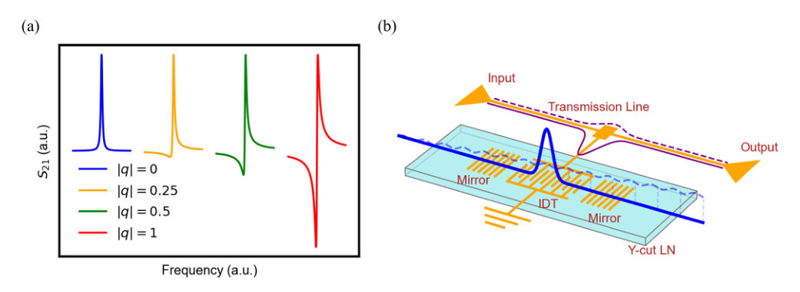
<figcaption class="paper-figure-caption"><b>Fig 1.</b> FIG. 1. (a) Schematic of the spectral line shape of a generic resonator for different values of the Fano parameter (q). The case when q equals 0 corresponds to the absence of Fano interference and results in a Lorentzian line shape (see Eq. 1). Increasing Fano interference, i.e., increasing |q|, results in an increasing asymmetry of the spectral line. (b) Schematic of the notch-type transmission measurement configuration of a surface acoustic wave device on Y-cut lithium niobate. The input microwave signal (solid purple) is injected via a transmission line waveguide and piezoelectrically transduced into resonant surface acoustic wave modes (solid blue) and a background acoustic continuum...</figcaption>
</figure>
<figure class="paper-figure-card">
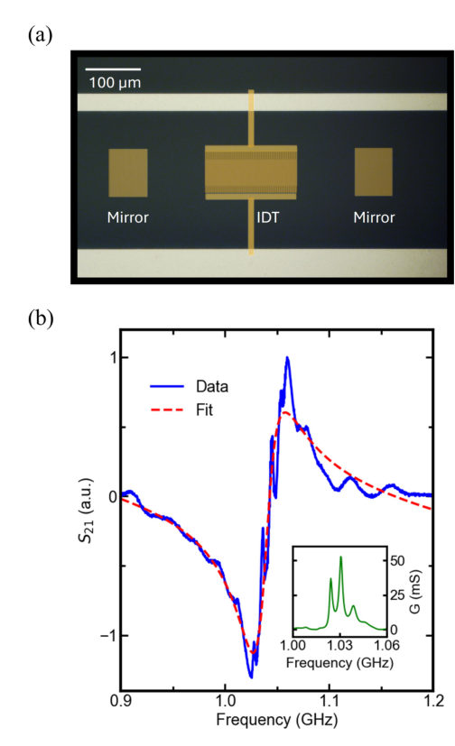
<figcaption class="paper-figure-caption"><b>Fig 2.</b> FIG. 2. (a) Optical false colored image of the SAW resonator (Device I), which consists of a central IDT structure, and acoustic Bragg mirrors on both sides of the IDT. The IDT is connected galvanically on one side to the center pin of a coplanar waveguide while the other side of the IDT is attached to ground. (b) Transmission spectrum S21 (blue data) of the SAW device showing the expected discrete resonant acoustic modes as dips, along with a characteristic asymmetric line shape corresponding to composite Fano interference in the device. The red dashed curve corresponds to a fit using Eq. 1. The expected response of the SAW resonator was designed using the coupling of modes method [19] as...</figcaption>
</figure>
<figure class="paper-figure-card">
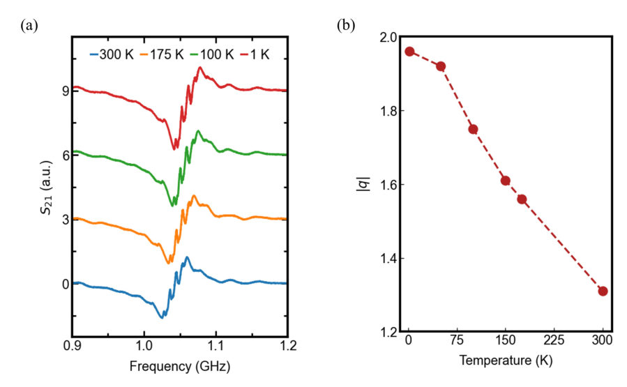
<figcaption class="paper-figure-caption"><b>Fig 3.</b> FIG. 3. (a) The spectral response of the SAW resonator (Device I) at different temperatures. The curves have been vertically shifted relative to each other for clarity. As the temperature decreases, the resonant acoustic modes shift to higher frequencies and the asymmetry of the overall line shape increases. (b) Dependence of the magnitude of the Fano parameter |q| versus temperature. With decreasing temperature, |q| increases, indicating an enhancement of the resonant acoustic pathway over the non-resonant electromagnetic background channel.</figcaption>
</figure>
<figure class="paper-figure-card">
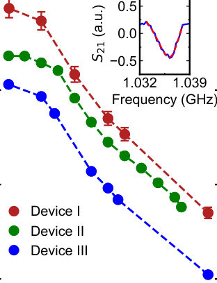
<figcaption class="paper-figure-caption"><b>Fig 4.</b> FIG. 4. Fano parameter as a function of temperature for the three SAW Devices (Devices I, II, and III) with vary- ing acoustic confinement. Device I, having 20 pairs of Bragg mirror elements, (red points) exhibits the highest value of |q| across the entire temperature range. As the surface acoustic wave confinement is reduced in the other devices (i.e.Device II with 10 pairs of mirror elements (green points), and Device III with no mirrors (blue points)) we observe a reduction in |q|, indicative of a systematic reduction of phononic interference effects with decreasing acoustic confinement. Inset: Magni- tude spectrum of an individual confined acoustic mode from Device I (blue) and...</figcaption>
</figure>
</div>

<p><strong>Summary.</strong> This paper investigates enhancing the sensitivity of SAW resonators by engineering their spectral response using Fano interference. The authors demonstrate the simultaneous control of both electromagnetic and acoustic Fano interference by modifying the resonator's acoustic confinement. This technique proves that spectral asymmetry can be tuned, offering a promising route for advanced classical and quantum sensing applications.</p>
<p><strong>Why it may be interesting.</strong> The ability to engineer spectral features via controlled interference mechanisms (Fano resonance) provides a powerful, non-traditional method for enhancing sensor sensitivity, which is relevant for developing high-precision quantum transducers or detectors.</p>
<details>
<summary>Detailed structure</summary>
<p><strong>Main problem.</strong> The primary goal is to enhance the sensitivity of Surface Acoustic Wave (SAW) resonators for sensing applications by engineering their spectral response.</p>
<p><strong>Main result.</strong> The work successfully demonstrates the simultaneous introduction of both electromagnetic and acoustic Fano interference to shape the spectral response, confirming that Bragg mirror design acts as a tunable knob for spectral symmetry.</p>
<p><strong>Method.</strong> The researchers measured the transmission spectrum ($S_{21}$) of SAW resonators across varying temperatures and systematically modified the acoustic confinement using different Bragg mirror configurations.</p>
<p><strong>Model / system.</strong> The physical platform is a SAW resonator fabricated on Y-cut LiNbO3, operating at GHz frequencies. The analysis models the spectral response using the Fano lineshape function, which accounts for interference between resonant and continuum scattering pathways.</p>
<p><strong>Key observables.</strong> Spectral line shape asymmetry, quantified by the Fano factor ($q$), resonance frequency ($f_0$), and the temperature dependence of these parameters.</p>
<p><strong>Important parameters / regimes.</strong> Temperature (ambient to $\sim 1 	ext{ K}$), acoustic reflectivity (controlled by Bragg mirror pairs), and the Fano parameter $q$.</p>
<p><strong>Assumptions / limitations.</strong> The interference effects can be separated by systematically modifying the acoustic confinement, allowing independent analysis of electromagnetic and acoustic contributions.</p>
<p><strong>Figures summary.</strong> Figures show schematics of the interference setup, measured transmission spectra ($S_{21}$) exhibiting asymmetric dips, and plots detailing the temperature dependence of the Fano factor $|q(T)|$ and the resonance frequency.</p>
<p><strong>Paper structure.</strong> The paper introduces the concept of using Fano interference to enhance SAW sensor sensitivity. It details the experimental setup using multiple devices with varying acoustic confinement. The core of the work involves fitting the measured spectral data to the Fano lineshape function to quantify the interplay between acoustic and electromagnetic interference, concluding with temperature-dependent analysis.</p>
</details>
<details>
<summary>Abstract</summary>
<p>Surface acoustic wave-based resonators are sensitive probes of condensed matter systems, as well as surface-selective sensors for chemistry and biology. Surface acoustic wave devices have also been integrated into hybrid quantum systems with qubit platforms for applications in quantum information processing and sensing. The sensitivity of piezoelectric surface wave-based resonators to investigate these various systems can be enhanced by optimizing the device architecture and electrical measurement techniques. Alternatively, tailoring the spectral symmetry, arising from interference effects, offers a promising route to further improve sensitivity. In this work, we demonstrate the simultaneous introduction of both electromagnetic and acoustic Fano interference to shape the spectral response of GHz-frequency surface acoustic wave resonators. By systematically modifying the acoustic reflectivity of the resonators, we are able to isolate and analyze each interference mechanism independently. The broad range of temperature operation, from ambient to cryogenic temperatures highlights the potential for both classical and quantum sensing applications.</p>
</details>
<p><sub><a href="#top">↑ back to top</a></sub></p>

<p><a id="paper-2608.18945"></a></p>
<h3 id="flat-and-topological-floquet-minibands-from-patterned-light-in-untwisted-bilayer-graphene"><a href="http://arxiv.org/abs/2608.18945v1">Flat and Topological Floquet Minibands from Patterned Light in Untwisted Bilayer Graphene</a></h3>
<p><strong>Authors:</strong> Muhammad Faisal, Micheal Vogl<br>
<strong>Type:</strong> theory · <strong>Category:</strong> other · <strong>PDF:</strong> <a href="https://arxiv.org/pdf/2608.18945v1">https://arxiv.org/pdf/2608.18945v1</a><br>
<strong>Analysis basis:</strong> full PDF text, analyzed in chunks
<strong>Topic relevance:</strong> <code>analog quantum simulation</code> <strong>3/5</strong> · <code>driven-dissipative phase transition</code> <strong>3/5</strong> · <code>Keldysh / 2PI / non-Gaussian methods</code> <strong>2/5</strong> · <code>methods for driven-dissipative</code> <strong>2/5</strong> · <code>non-equilibrium universality</code> <strong>2/5</strong> · <code>interference shaping light</code> <strong>1/5</strong></p>
<div class="figure-strip-hint">↔ Scroll figures horizontally</div>
<div class="paper-figures-scroll">
<figure class="paper-figure-card">
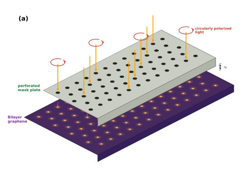
<figcaption class="paper-figure-caption"><b>Fig 1.</b> FIG. 1. Cartoon of bilayer graphene illuminated by spa- tially patterned circularly polarized light transmitted through a hexagonal mask.</figcaption>
</figure>
<figure class="paper-figure-card">
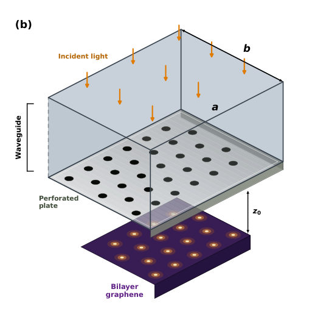
<figcaption class="paper-figure-caption"><b>Fig 2.</b> FIG. 2. Cartoon for illuminating bilayer graphene with a spa- tially patterned longitudinal light field generated by a vertical waveguide with a hexagonal array of apertures at the exit of the waveguide.</figcaption>
</figure>
<figure class="paper-figure-card">
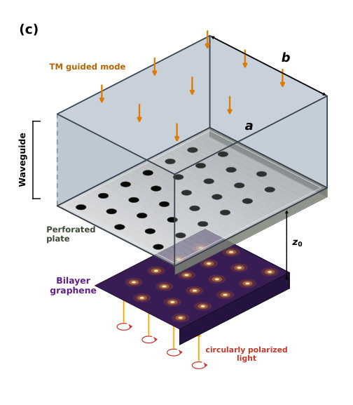
<figcaption class="paper-figure-caption"><b>Fig 3.</b> FIG. 3. Cartoon of simultaneous illumination of bilayer graphene with uniform circularly polarized and patterned lon- gitudinal light generated by a rectangular waveguide as de- scribed in Case 2.</figcaption>
</figure>
<figure class="paper-figure-card">
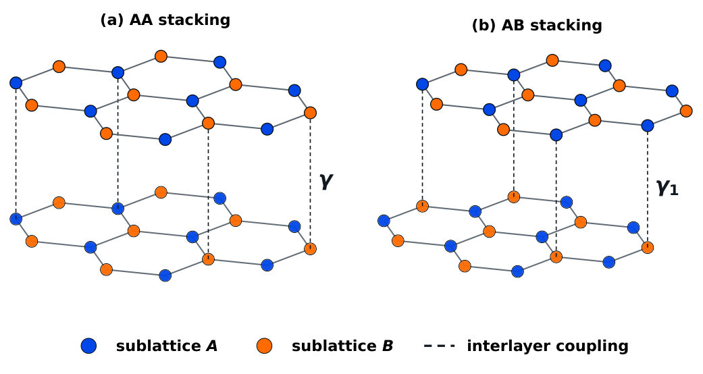
<figcaption class="paper-figure-caption"><b>Fig 4.</b> FIG. 4. Stacking configurations of bilayer graphene. The A and B sublattices are shown in blue and orange, respectively. The intralayer nearest-neighbor hopping is denoted by γ and vertical bonds represent the interlayer coupling. (a) In AA stacking, each atom lies directly above the same sublattice in the opposite layer, giving interlayer hopping γ between A1–A2 and B1–B2. (b) In AB (Bernal) stacking, the upper layer is shifted so that A2 lies above B1, forming the dimer pair coupled by γ1, while A1 and B2 remain non-dimer sites.</figcaption>
</figure>
<figure class="paper-figure-card">
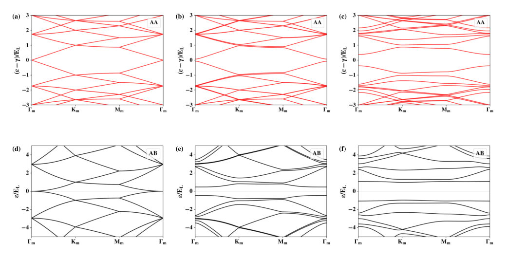
<figcaption class="paper-figure-caption"><b>Fig 5.</b> FIG. 5. Evolution of the quasienergy band structure under increasing patterned circularly polarized drive. Panels (a)–(c) show AA-stacked bilayer graphene for a0 = 0.00, 0.10, and 0.25, respectively; panels (d)–(f) show AB-stacked bilayer graphene for a0 = 0.00, 0.07, and 0.12. In all cases, L = 100 nm and ¯hΩ= 3 eV. The quasienergy is plotted in units of EL, defined separately for the two stackings as described in the text: for AA we show (ε −γ)/EL with EL = ¯hvF |Km|, and for AB we show ε/EL with EL = (¯hvF |Km|)2/γ1.</figcaption>
</figure>
</div>

<p><strong>Summary.</strong> The authors propose using patterned light fields as a tunable alternative to physical strain or twisting to create superlattices in bilayer graphene. By controlling the electromagnetic drive, they can independently modulate the electronic couplings, leading to the emergence of flat bands and measurable topological invariants like the Chern number. This establishes a highly flexible platform for realizing and studying moiré-like quantum phases.</p>
<p><strong>Why it may be interesting.</strong> This work directly addresses the engineering of topological matter using external, tunable fields, which is highly relevant to open quantum systems and quantum optics approaches to condensed matter physics.</p>
<details>
<summary>Detailed structure</summary>
<p><strong>Main problem.</strong> To find a flexible and tunable method to engineer flat bands and topological phases in bilayer graphene, bypassing the limitations of physically fixed strain or twisting.</p>
<p><strong>Main result.</strong> Patterned electromagnetic fields allow for the independent and tunable control of intralayer and interlayer couplings, inducing isolated, nearly flat bands and rich topological structures characterized by calculable Chern numbers.</p>
<p><strong>Method.</strong> The study employs Floquet engineering by driving the system with patterned light fields, analyzing the resulting quasienergy band structure and topological invariants.</p>
<p><strong>Model / system.</strong> The system is untwisted bilayer graphene (AA- and AB-stacked) subjected to time-periodic driving from patterned in-plane and out-of-plane electromagnetic fields.</p>
<p><strong>Key observables.</strong> Electronic band structure (minibands), quasienergy band structures, and valley Chern numbers.</p>
<p><strong>Important parameters / regimes.</strong> Driving frequency ($\Omega$), superlattice period ($L$), and the relative strengths of the patterned fields ($a_0$).</p>
<p><strong>Assumptions / limitations.</strong> The analysis uses the Floquet-Bloch formalism and assumes the driving frequency is high enough to prevent overlap of Floquet replicas.</p>
<p><strong>Figures summary.</strong> Figures illustrate the band structures (quasienergy plots) under various driving conditions (circularly polarized, longitudinal, combined) as a function of driving frequency and superlattice period, alongside phase diagrams showing Chern numbers.</p>
<p><strong>Paper structure.</strong> The paper systematically introduces the problem, details the optical coupling mechanisms (intralayer vs. interlayer), and then presents results comparing the topological outcomes (Chern numbers) and band flattening achieved using different combinations of patterned light drives.</p>
</details>
<details>
<summary>Abstract</summary>
<p>Two-dimensional superlattices in van der Waals materials host flat bands and nontrivial topology, most famously at the so-called magic angles of twisted bilayer graphene, where flat bands give rise to correlated and topological phases. Yet these superlattices are usually created by twisting the layers or applying strain, and once a sample is fabricated, their period is fixed and extremely difficult to tune. Here we propose an alternative route: imprint the superlattice optically, using patterned electromagnetic fields rather than a physical twist or strain. We show that patterned in-plane cir- cularly polarized light and a combined drive consisting of a patterned out-of-plane longitudinal field and a uniform circularly polarized field produce isolated bands in both AA- and AB-stacked bilayer graphene. In AB stacking, the central bands additionally become nearly flat, capturing key features of a driven moir/'e superlattice. In this approach, the superlattice period is set by the illumination and is straightforward to tune, and circularly polarized light breaks time-reversal symmetry. Computing the valley Chern numbers of the central bands, we find a rich topological structure with several phase transitions in both stackings. Our results establish light-induced superlattices as a flexible and tunable platform for engineering flat bands and topological phases in bilayer graphene.</p>
</details>
<p><sub><a href="#top">↑ back to top</a></sub></p>

<p><a id="paper-2608.18556"></a></p>
<h3 id="floquet-engineering-of-topological-bands-in-semiconductor-van-der-waals-heterobilayers"><a href="http://arxiv.org/abs/2608.18556v1">Floquet engineering of topological bands in semiconductor van der Waals heterobilayers</a></h3>
<p><strong>Authors:</strong> Eréndira Santana-Suárez, Brayan E. Walteros-Mendivelso, A. Jazmín Tapia-de-la-Rosa, Mahmoud M. Asmar, David A. Ruiz-Tijerina<br>
<strong>Type:</strong> theory · <strong>Category:</strong> other · <strong>PDF:</strong> <a href="https://arxiv.org/pdf/2608.18556v1">https://arxiv.org/pdf/2608.18556v1</a><br>
<strong>Analysis basis:</strong> full PDF text, analyzed in chunks
<strong>Topic relevance:</strong> <code>driven-dissipative phase transition</code> <strong>3/5</strong> · <code>Keldysh / 2PI / non-Gaussian methods</code> <strong>2/5</strong> · <code>analog quantum simulation</code> <strong>2/5</strong> · <code>methods for driven-dissipative</code> <strong>2/5</strong> · <code>non-equilibrium universality</code> <strong>2/5</strong></p>
<div class="figure-strip-hint">↔ Scroll figures horizontally</div>
<div class="paper-figures-scroll">
<figure class="paper-figure-card">
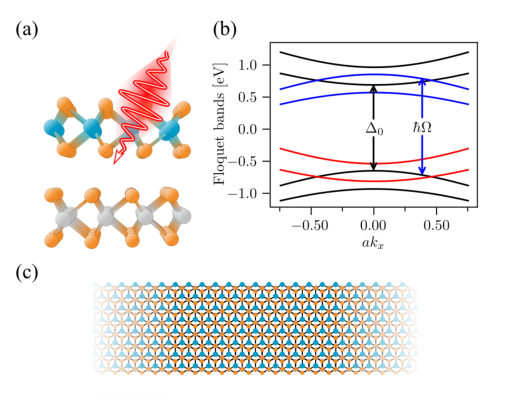
<figcaption class="paper-figure-caption"><b>Fig 1.</b> FIG. 1. (a) Schematic of a near-IR laser pulse impinging on a P-stacked WSe2/MoSe2 hetero-bilayer. (b) Zero-field Floquet-Bloch bands for ℏΩ≳∆0, in an extended Floquet BZ scheme. The equilibrium (m = 0) bands are shown in black, whereas the m = 1 (m = −1) replicas of the valence (conduction) band are shown in blue (red). Clear four-band sectors form, separated by energies of order ∆0. (c) Illustra- tion of a P-MX′ zig-zag nanoribbon.</figcaption>
</figure>
<figure class="paper-figure-card">
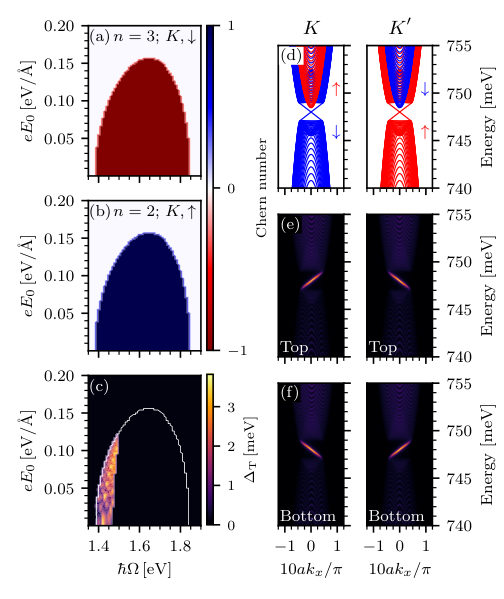
<figcaption class="paper-figure-caption"><b>Fig 2.</b> FIG. 2. Topological phase diagram and chiral edge states of P- MX′ WSe2/MoSe2 driven with LPL. (a), (b) Chern numbers of K-point, spin-↓bulk bands n = 3 and n = 2, respectively, vs. field intensity and frequency. (c) Map of the topological band gap vs. field parameters, with the topological region delineated in white. (d) K and K′ point band structures of a zig-zag nanoribbon of width L = 1500a for ℏΩ= 1.495 eV and eE0 = 60 meV · Å −1. (e) and (f) show the LDOS [log (1 + ρ), bright indicates a high value] at the top and bottom edges of the ribbon for (K, ↓) bands on the left and (K′, ↑) bands on the right. The in-gap modes of panel (d) are spin-valley locked chiral edge states, a hallmark...</figcaption>
</figure>
<figure class="paper-figure-card">
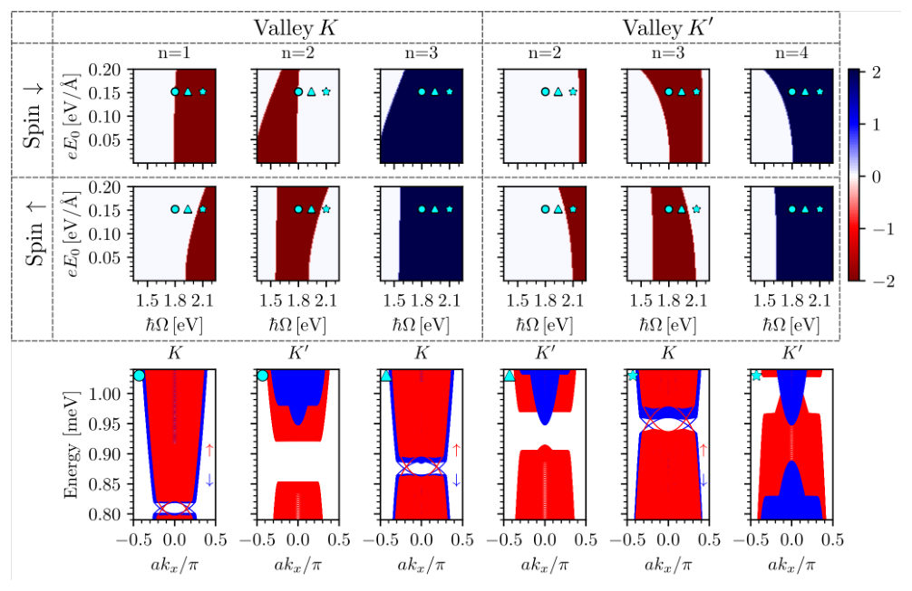
<figcaption class="paper-figure-caption"><b>Fig 3.</b> FIG. 3. (Top) Topological phase diagram for 2H-WSe2/MoSe2 irradiated by RCPL, for both spins at both valleys. Bands with zero Chern number throughout the parameter space explored have been omitted. (Bottom) Band structures for a zig-zag nanoribbon (L = 1500a) at the points of parameter space indicated with •, ▲and ⋆in the phase diagrams, corresponding to light-field parameters ℏΩ= 1.80, 1.92 and 2.1 eV for fixed eE0 = 156 meV/Å.</figcaption>
</figure>
<figure class="paper-figure-card">
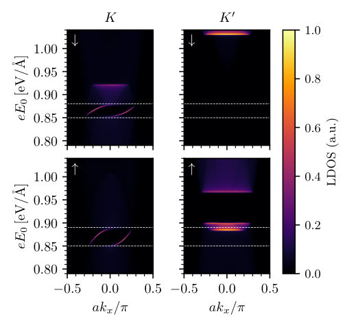
<figcaption class="paper-figure-caption"><b>Fig 4.</b> FIG. 4. Spin- and valley-resolved LDOS (scaled as in Fig. 2) at the top edge of nanoribbon considered in Fig. 3. Dashed lines frame the light-induced topological gap.</figcaption>
</figure>
</div>

<p><strong>Summary.</strong> This theoretical study demonstrates Floquet engineering of topological bands in TMD heterobilayers using near-infrared to visible light. By applying the Floquet formalism, the authors predict that periodic driving can induce topological phase transitions, leading to high Chern numbers and robust chiral edge states. This establishes TMDs as a promising platform for realizing engineered topological quantum states.</p>
<p><strong>Why it may be interesting.</strong> This work directly applies concepts from quantum optics and open quantum systems (periodic driving) to solid-state physics, demonstrating how external fields can be used to engineer fundamental quantum properties like topology in solid-state materials.</p>
<details>
<summary>Detailed structure</summary>
<p><strong>Main problem.</strong> The paper investigates how periodic driving using light can induce topological phase transitions and engineer topological insulating bands in semiconductor van der Waals heterobilayers.</p>
<p><strong>Main result.</strong> The system exhibits non-trivial Floquet topological insulating phases, achieving Chern numbers up to $\pm 2$ and demonstrating chiral edge states indicative of robust topological protection.</p>
<p><strong>Method.</strong> The Floquet formalism is applied to a light-coupled $\mathbf{k}\cdot\mathbf{p}$ Hamiltonian, leading to the calculation of topological invariants like the Chern number.</p>
<p><strong>Model / system.</strong> The physical system is based on commensurate type-II TMD heterobilayers (e.g., $    ext{WSe}_2/ ext{MoSe}_2$). The model uses an effective Hamiltonian derived from the lowest-order $\mathbf{k}\cdot\mathbf{p}$ theory, incorporating the interaction with an incident electromagnetic wave.</p>
<p><strong>Key observables.</strong> Topological phase diagrams (Chern numbers $C$), topological band gaps ($\Delta_T$), and chiral edge states.</p>
<p><strong>Important parameters / regimes.</strong> Light frequency ($\Omega$), electric-field amplitude ($E_0$), and polarization (LPL, CPL, RCPL). The analysis focuses on the near-resonant regime ($\hbar\Omega \gtrsim \Delta_0$).</p>
<p><strong>Assumptions / limitations.</strong> The model assumes a perfectly aligned, commensurate heterobilayer, and the analysis relies on truncating the Floquet Hamiltonian to a finite set of harmonics.</p>
<p><strong>Figures summary.</strong> Figures illustrate the topological phase diagrams showing regions of non-trivial topology, band structures confirming the gap opening, and LDOS calculations visualizing the predicted chiral edge states.</p>
<p><strong>Paper structure.</strong> The paper systematically develops the effective Hamiltonian using the Floquet formalism, calculates the Chern number as a function of driving parameters, and then analyzes the resulting topological phase diagrams and edge state properties for different stacking and polarization configurations.</p>
</details>
<details>
<summary>Abstract</summary>
<p>We show that periodic driving with near-infrared to visible light drives topological phase transitions in the photon-dressed band structure of transition-metal dichalcogenide heterobilayers. We apply the Floquet formalism to a light-coupled lowest-order $\mathbf{k}\cdot\mathbf{p}$ Hamiltonian, and obtain an effective four-band model that correctly captures the essential photon-dressed bands of type-II TMD heterobilayers in the vicinity of the first photon resonance. Crossings between the zero- and one-photon sectors effectively invert the bands, yielding topological phases with Chern numbers up to $\pm 2$ and gaps of order 10 meV. Our results establish TMDs as prime candidates for engineering bands with higher Chern numbers, and exploring driven topological states in solid state media.</p>
</details>
<p><sub><a href="#top">↑ back to top</a></sub></p>

<p><a id="paper-2608.18466"></a></p>
<h3 id="efficient-calculation-of-real-space-lattice-propagators-in-the-presence-of-a-fermi-sea"><a href="http://arxiv.org/abs/2608.18466v1">Efficient calculation of real-space lattice propagators in the presence of a Fermi sea</a></h3>
<p><strong>Authors:</strong> Oliver Tong, Mona Berciu<br>
<strong>Type:</strong> theory · <strong>Category:</strong> other · <strong>PDF:</strong> <a href="https://arxiv.org/pdf/2608.18466v1">https://arxiv.org/pdf/2608.18466v1</a><br>
<strong>Analysis basis:</strong> full PDF text, analyzed in chunks
<strong>Topic relevance:</strong> <code>Keldysh / 2PI / non-Gaussian methods</code> <strong>3/5</strong> · <code>analog quantum simulation</code> <strong>2/5</strong> · <code>methods for driven-dissipative</code> <strong>2/5</strong></p>
<div class="figure-strip-hint">↔ Scroll figures horizontally</div>
<div class="paper-figures-scroll">
<figure class="paper-figure-card">
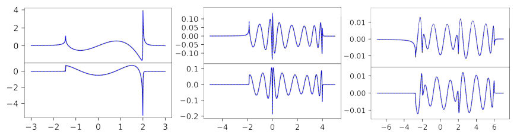
<figcaption class="paper-figure-caption"><b>Fig 1.</b> Figure 1: Real (top) and imaginary (bottom) components of Gn(z; x) at η = 0.005 computed by direct integration (black solid curve) and via our method (blue dashed curve) in (left) 1D at n = 4, x = 0.24; (middle) 2D at n = (12, 8), x = 0.2; and (right) 3D at n = (3, 8, 4), x = 0.14. In all cases t = 1.</figcaption>
</figure>
<figure class="paper-figure-card">
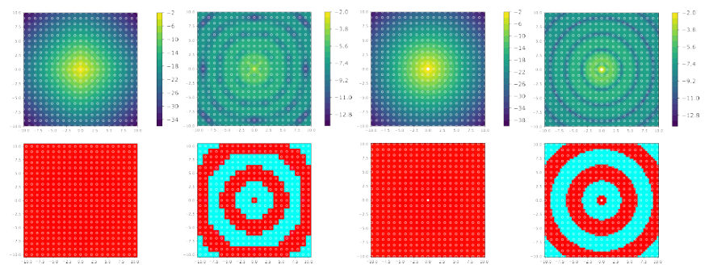
<figcaption class="paper-figure-caption"><b>Fig 2.</b> Figure 2: Upper row: Maps of log(|GA n(−10+0.02i; x)|), and Lower row: Maps of its overall sign, with red/teal showing GA &lt; 0 and GA &gt; 0, respectively. The lattice sites n are indicated by small white circles, and only the values at these points are meaningful; the heat map is simply to help visualize the changes with n. The left columns show the lattice results for x = 0 and x = 0.1, respectively. The right columns show the results of the continuum approximation for the same values. In all cases, the hopping t = 1.</figcaption>
</figure>
<figure class="paper-figure-card">

<figcaption class="paper-figure-caption"><b>Fig 3.</b> Figure 1 shows a few illustrative comparisons between real-space propagators calculated with this method versus direct momentum integration, for hypercubic lattices in D = 1, 2, 3 and for a nearest-neighbor hopping where we set t = 1. From now on we focus on the 2D square lattice with nearest-neighbour hopping and use it to illustrate some of the effects of the Fermi sea, and in particular of the shape of the Fermi surface, on the real-space lattice propagators. We begin by considering the behavior of the propagators as a function of x at energies below the free electron bandwidth. For our 2D example, we illustrate this at ω = −10t in the next few plots; the behaviour is qualitatively...</figcaption>
</figure>
<figure class="paper-figure-card">
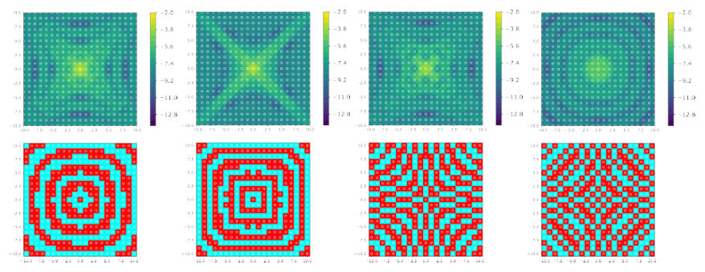
<figcaption class="paper-figure-caption"><b>Fig 4.</b> Figure 3: Same as Fig. 2, but showing the lattice results for x = 0.3, 0.45, 0.7 and 0.9 (left to right columns). In all cases, the hopping t = 1.</figcaption>
</figure>
<figure class="paper-figure-card">
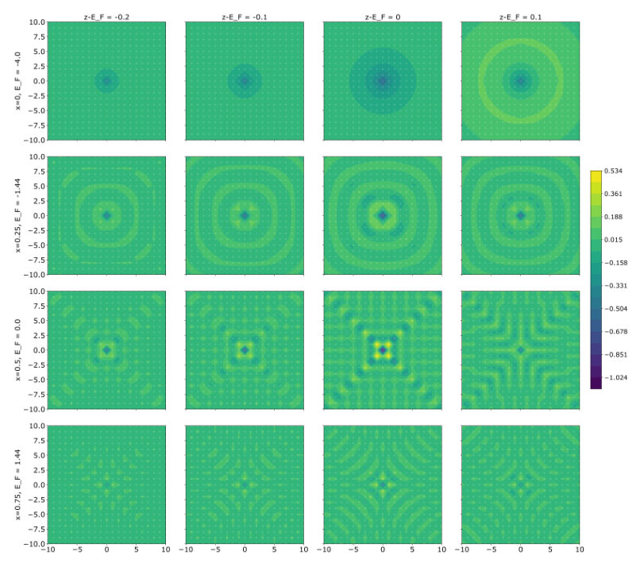
<figcaption class="paper-figure-caption"><b>Fig 5.</b> Figure 4: Maps of ReGA n(z; x) versus n. From top to bottom, the rows are for x = 0, 0.25, 0.5 and 0.75, respectively. The corresponding Fermi energies are EF = −4t, −1.44t, 0, 1.44t. From left to right, the columns correspond to ω = EF −0.2, EF −0.1, EF , EF + 0.1, respectively. In all cases t = 1 and η = 0.02.</figcaption>
</figure>
</div>

<p><strong>Summary.</strong> This paper presents an efficient, dimension-agnostic method to calculate real-space lattice Green's functions for doped tight-binding models. By leveraging Kramers-Kronig relations and FFTs, the authors bypass the computational bottleneck of direct Brillouin-zone integration. The results demonstrate that the spatial decay and structure of the propagator directly encode the geometry of the Fermi surface.</p>
<p><strong>Why it may be interesting.</strong> This work provides a powerful, dimension-independent computational tool for studying electronic structure in doped solids, which is highly relevant for understanding transport and correlation effects in materials science.</p>
<details>
<summary>Detailed structure</summary>
<p><strong>Main problem.</strong> The paper develops an efficient theoretical method to calculate real-space lattice propagators (Green's functions) for a tight-binding model when the system is doped, i.e., in the presence of a Fermi sea.</p>
<p><strong>Main result.</strong> The method achieves a computational cost independent of the lattice dimensionality by utilizing Kramers-Kronig relations evaluated via FFTs, allowing the mapping of Fermi surface geometry onto the spatial structure of the propagators.</p>
<p><strong>Method.</strong> The core technique involves relating the finite-$x$ propagators to the $x=0$ case using known identities and then employing Kramers-Kronig relations, which are efficiently computed for all energies simultaneously using Fast Fourier Transforms.</p>
<p><strong>Model / system.</strong> The model is a non-interacting, tight-binding Hamiltonian defined on an arbitrary lattice, characterized by a Fermi sea determined by the carrier concentration $x$. The calculation focuses on the particle-addition part of the lattice Green's function.</p>
<p><strong>Key observables.</strong> Real-space lattice propagators ($G_n(z; x)$), the real and imaginary parts of the propagator, and the resulting diffraction patterns.</p>
<p><strong>Important parameters / regimes.</strong> Carrier concentration ($x$), Fermi energy ($E_F$), lattice distance ($n$), and energy ($\omega$).</p>
<p><strong>Assumptions / limitations.</strong> The method is valid for any lattice and dispersion, provided the $x=0$ propagators are known, and it is derived in the limit of zero broadening ($\eta 	o 0$).</p>
<p><strong>Figures summary.</strong> Figures compare the proposed method against direct integration across 1D, 2D, and 3D lattices. Maps illustrate how the Fermi surface geometry (e.g., circular vs. square) imprints itself on the spatial structure of the propagator magnitude and sign.</p>
<p><strong>Paper structure.</strong> The paper introduces the problem, derives the necessary identities relating finite-$x$ propagators to $x=0$ counterparts, details the use of Kramers-Kronig relations via FFTs, and validates the method by comparing results across various dimensions and doping levels.</p>
</details>
<details>
<summary>Abstract</summary>
<p>We present an efficient method for computing the real-space propagators (lattice Green's functions) of any tight-binding Hamiltonian in the presence of a Fermi sea with carrier concentration $x$. The method is valid for any lattice, dispersion, and dimension, provided the corresponding $x=0$ propagators are known. We show that suitable combinations of the finite-$x$ particle-addition propagators have a real or imaginary part trivially related to their $x=0$ counterpart, while the remaining part follows from a Kramers-Kronig relation that can be evaluated for all energies at once using the fast Fourier transforms. The computational cost is therefore independent of the dimensionality, unlike that of direct Brillouin-zone integration. The particle-removal propagators follow from general identities. We validate the method against direct integration for hypercubic lattices in one, two, and three dimensions, and use the 2D square lattice to illustrate how the shape of the Fermi surface is imprinted on the spatial structure of the propagators. In particular, at energies far outside the band, the propagator maps converge to the Fraunhofer diffraction pattern whose aperture is the unoccupied part of the Brillouin zone.</p>
</details>
<p><sub><a href="#top">↑ back to top</a></sub></p>

<p><a id="paper-2608.18427"></a></p>
<h3 id="optical-poling-of-a-quantum-ferroelectric-metal-across-the-order-disorder-phase-transition"><a href="http://arxiv.org/abs/2608.18427v1">Optical poling of a quantum ferroelectric metal across the order-disorder phase transition</a></h3>
<p><strong>Authors:</strong> Mohamed Kandil, Yasuhide Tomioka, Yafei Ren, Ryan Comes, Isao H. Inoue, Wencan Jin<br>
<strong>Type:</strong> both · <strong>Category:</strong> statistical mechanics · <strong>PDF:</strong> <a href="https://arxiv.org/pdf/2608.18427v1">https://arxiv.org/pdf/2608.18427v1</a><br>
<strong>Analysis basis:</strong> full PDF text, analyzed in chunks
<strong>Topic relevance:</strong> <code>driven-dissipative phase transition</code> <strong>3/5</strong> · <code>quantum measurements</code> <strong>3/5</strong></p>
<div class="figure-strip-hint">↔ Scroll figures horizontally</div>
<div class="paper-figures-scroll">
<figure class="paper-figure-card">
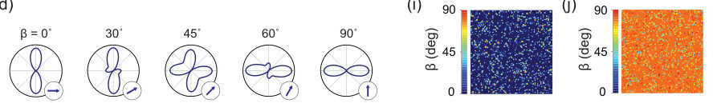
<figcaption class="paper-figure-caption"><b>Fig 1.</b> FIG. 1. Local dipoles induced SHG in the quantum ferroelectric metal. (a) Temperature-</figcaption>
</figure>
<figure class="paper-figure-card">
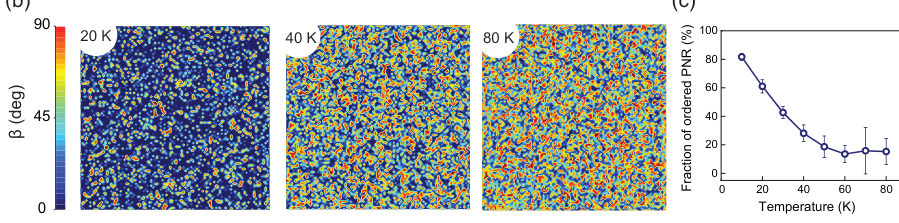
<figcaption class="paper-figure-caption"><b>Fig 2.</b> FIG. 2. Meltdown of ordered polar nanoregions in warmup cycle. (a) Polar plots of</figcaption>
</figure>
<figure class="paper-figure-card">
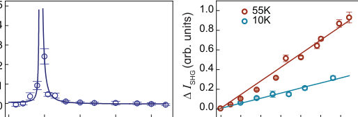
<figcaption class="paper-figure-caption"><b>Fig 3.</b> FIG. 3. Dynamics of polar nanoregions across the order-disorder transition. (a) RA-</figcaption>
</figure>
<figure class="paper-figure-card">
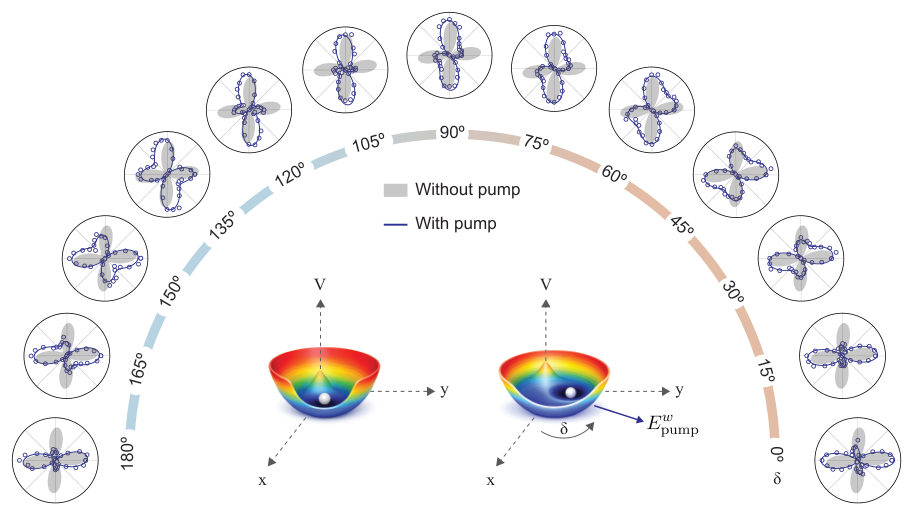
<figcaption class="paper-figure-caption"><b>Fig 4.</b> FIG. 4. Optical poling of polar nanoregions in the disordered phase. RA-SHG patterns</figcaption>
</figure>
</div>

<p><strong>Summary.</strong> This work investigates the ferroelectric transition in quantum ferroelectric metals using advanced optical techniques. By employing RA-SHG and pump-probe measurements, the authors confirm the order-disorder nature of the transition. Crucially, they demonstrate that femtosecond optical pulses can deterministically align the disordered polar nanoregions, opening an all-optical pathway for controlling these quantum materials.</p>
<p><strong>Why it may be interesting.</strong> The ability to use light to deterministically write and read out polarization textures in a quantum material provides a novel, non-electrical control mechanism, which is highly relevant for understanding and manipulating quantum states in condensed matter systems.</p>
<details>
<summary>Detailed structure</summary>
<p><strong>Main problem.</strong> The paper addresses the unsettled microscopic origin of the ferroelectric transition in quantum ferroelectric metals and seeks to develop methods to probe and control the associated polar nanoregions.</p>
<p><strong>Main result.</strong> The study unambiguously demonstrates the order-disorder nature of the ferroelectric transition and establishes an all-optical route to deterministically control the orientation of these polar nanoregions.</p>
<p><strong>Method.</strong> The research combines symmetry-resolved optical measurements (Rotational Anisotropy Second Harmonic Generation, RA-SHG) with ultrafast pump-probe spectroscopy to track polarization dynamics.</p>
<p><strong>Model / system.</strong> The physical system is electron-doped strontium titanate, a prototypical quantum ferroelectric metal. The analysis models the local dipoles as tunneling between states, and the SHG response is analyzed based on fluctuations in local polarization ($\langle P^2 
angle$-type).</p>
<p><strong>Key observables.</strong> RA-SHG intensity patterns, which reveal orientational statistics; the divergence of $\Delta I_{	ext{SHG}}$ near the transition temperature ($T_{	ext{FE}}$); and the degree of alignment achieved via optical poling.</p>
<p><strong>Important parameters / regimes.</strong> Temperature ($T$), carrier concentration, and the polarization angle ($\delta$) of the incident optical pump field.</p>
<p><strong>Assumptions / limitations.</strong> The analysis assumes that the SHG signal is dominated by local dipole fluctuations and that the optical poling process can be modeled by fitting the pump-probe signal to a specific functional form.</p>
<p><strong>Figures summary.</strong> Figures show temperature-dependent phase diagrams, RA-SHG patterns confirming 2-fold symmetry, and pump-probe measurements demonstrating that the optical field aligns over 80% of the polar nanoregions above the transition temperature.</p>
<p><strong>Paper structure.</strong> The paper first establishes the physical system and the debate between ferroelectric mechanisms. It then uses RA-SHG to characterize the transition as order-disorder. Finally, it employs pump-probe spectroscopy to demonstrate deterministic, ultrafast optical control (poling) of the polar nanoregions.</p>
</details>
<details>
<summary>Abstract</summary>
<p>Electron-doped strontium titanate has emerged as a prototypical quantum ferroelectric metal. It provides a fertile ground to explore how ferroelectric instability intertwined with itinerant electrons creates quantum phenomena, including unconventional superconductivity. Despite extensive studies, the microscopic origin of the ferroelectric transition remains unsettled, with distinct interpretations based on displacive mechanism driven by soft mode and order-disorder alignment of local dipoles. In particular, the local dipoles form nanoscale, spatially heterogeneous clusters, termed polar nanoregions, posing a significant challenge for probing or manipulating them. Here, using rotational anisotropy second harmonic generation, a symmetry-resolved probe, we quantify the orientational statistics of polar nanoregions in dilute electron-doped Sr$_{0.95}$Ba$_{0.05}$Ti$_{1-x}$Nb$_x$O$_3$. By tracking the alignment and meltdown of polar nanoregions in thermal cycles, we unambiguously demonstrate the order-disorder nature of the ferroelectric transition. We further show that, above transition temperature, femtosecond optical fields enable deterministic control of otherwise disordered polar nanoregions, realizing reversible write and readout of polar textures on ultrafast timescales. Our findings provide new insight into ferroelectric instability and establish an all-optical route of controlling polar metal systems where conventional electrical approaches are not feasible.</p>
</details>
<p><sub><a href="#top">↑ back to top</a></sub></p>

<p><a id="paper-2608.18277"></a></p>
<h3 id="on-the-electronic-and-vibrational-dimensionality-of-nanometer-scale-silicon-structures"><a href="http://arxiv.org/abs/2608.18277v1">On the electronic and vibrational dimensionality of nanometer-scale silicon structures</a></h3>
<p><strong>Authors:</strong> Massimo V. Fischetti, Dallin O. Nielsen, Edward Chen<br>
<strong>Type:</strong> theory · <strong>Category:</strong> other · <strong>PDF:</strong> <a href="https://arxiv.org/pdf/2608.18277v1">https://arxiv.org/pdf/2608.18277v1</a><br>
<strong>Analysis basis:</strong> full PDF text, analyzed in chunks
<strong>Topic relevance:</strong> <code>Keldysh / 2PI / non-Gaussian methods</code> <strong>3/5</strong> · <code>correlated / nonlocal dissipation</code> <strong>1/5</strong> · <code>methods for driven-dissipative</code> <strong>1/5</strong></p>
<div class="figure-strip-hint">↔ Scroll figures horizontally</div>
<div class="paper-figures-scroll">
<figure class="paper-figure-card">
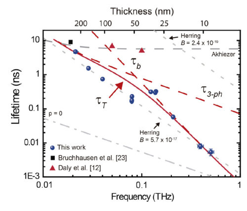
<figcaption class="paper-figure-caption"><b>Fig 1.</b> FIG. 1. Figure 3 from Ref. [45] ”Phonon lifetime of the first- order dilatational mode in free-standing silicon membranes as a function of frequency. Experimental data of free-standing silicon membranes with thickness values ranging from approx- imately 222 to 8 nm (black square [28], blue circles) and bulk silicon (red triangles [12]). The red dashed lines show the contributions to the finite phonon lifetime from normal three-phonon interactions 1/τ3−ph and boundary scattering 1/τb as indicated. The total contribution, calculated using Matthiessen’s rule 1/τT = 1/τ3−ph+1/τb is shown by the solid red line labelled 1/τT . Other models for intrinsic (grey dot- ted line: Herring [12,30], grey...</figcaption>
</figure>
<figure class="paper-figure-card">
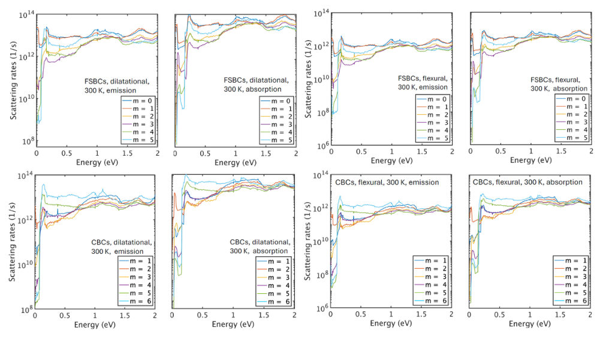
<figcaption class="paper-figure-caption"><b>Fig 2.</b> FIG. 2. Calculated rates for electron emission and absorption of the confined LA (dilatational) and TA (flexural) phonons in the Si nanosheets considered in Ref. [1]: A 1.63 nm-thin (100) Si film with top and bottom gate stacks composed by a 0.6 nm-thin SiO2 and a 1.6 nm-thin HfO2 insulating layers. The integer labels m in the legends refer to the confined vibrational modes in the nanosheet assuming clamped (CBC) or free-standing (FSBC) boundary conditions at the Si/SiO2 interfaces. Reference [1] provides all details about the methods used to obtain the data shown here.</figcaption>
</figure>
</div>

<p><strong>Summary.</strong> This theoretical work establishes the phase-coherence length ($\lambda_{\phi}$) as the key metric for assessing dimensionality in nanoscale semiconductors. By analyzing electron-phonon coupling in Si nanosheets, the authors provide quantitative estimates for critical thicknesses, arguing that confinement is determined by how far an excitation can maintain phase coherence. This has significant implications for designing next-generation quantum devices.</p>
<p><strong>Why it may be interesting.</strong> The rigorous focus on the phase-coherence length ($\lambda_{\phi}$) as the primary diagnostic tool provides a quantitative, advanced perspective on confinement effects, which is crucial for understanding open quantum systems in solid-state devices.</p>
<details>
<summary>Detailed structure</summary>
<p><strong>Main problem.</strong> The paper addresses the fundamental challenge of quantitatively determining the electronic and vibrational dimensionality of semiconductor nanostructures, such as silicon nanosheets.</p>
<p><strong>Main result.</strong> The critical length scale for confinement is argued to be the electron and phonon phase-coherence length ($\lambda_{\phi}$), which dictates whether the system behaves as a 2DEG or approaches bulk 3D behavior.</p>
<p><strong>Method.</strong> The analysis employs theoretical tools, including perturbation theory to calculate the electron self-energy ($\Sigma_0$) due to electron-phonon interactions, and deriving 2D phonon density of states.</p>
<p><strong>Model / system.</strong> The primary system studied is silicon nanosheets, modeled as quantum wells or thin films, with the physics governed by electron-phonon coupling and phonon scattering processes.</p>
<p><strong>Key observables.</strong> Electron spectral density $A(\mathbf{K}, \omega)$, electron self-energy $\Sigma_0(\mathbf{K}, \omega)$, and the effective phase-coherence length ($\lambda_{\phi}$).</p>
<p><strong>Important parameters / regimes.</strong> Critical confinement lengths are estimated to be around 8 nm for electrons at room temperature, while phonon confinement depends heavily on wavelength (from 10 nm to $1 \mu$m).</p>
<p><strong>Assumptions / limitations.</strong> The analysis relies on perturbation theory for calculating scattering rates and assumes that the coherence length is the definitive diagnostic parameter for dimensionality.</p>
<p><strong>Figures summary.</strong> Not specified, but the notes reference figures illustrating the comparison of coherence lengths to physical dimensions and the spectral broadening due to electron-phonon coupling.</p>
<p><strong>Paper structure.</strong> The paper progresses by first defining the problem of dimensionality assessment, then developing a theoretical framework using self-energy calculations for electrons, and finally extending this analysis to phonon confinement effects.</p>
</details>
<details>
<summary>Abstract</summary>
<p>We discuss the problem of assessing the electronic and vibrational dimensionality of a semiconductor nanostructure: How thin and/or wide must a nanostructure be in order to induce electron and phonon confinement? Clarifying the physical justification for common criteria found in the literature, we view the electron coherence length (defined as the electron and phonon inelastic mean free path) as their <code>field of view' and argue (or, better yet,</code>speculate') that this sets the important length scale. Considering the example of Si nanosheets at room temperature, and drawing from results found in the literature, we estimate that the critical length below which electrons are subject to quantum confinement is of the order of (or smaller than) 8 nm, when their coherence length is determined by energy losses to phonons and remote phonons in gated structures. On the contrary, no single length-scale can be given for phonons: Taking their coherence length as determined by scattering with electrons and anharmonic three-phonon processes, short wavelength acoustic and optical phonons may be confined only by structures as small as 10 nm. Long-wavelength acoustic phonons, instead, may exhibit a coherence length of the order of 1 micrometer, so that they may be confined over much larger distances.</p>
</details>
<p><sub><a href="#top">↑ back to top</a></sub></p>

<p><a id="paper-2608.19113"></a></p>
<h3 id="ultra-low-energy-20-300-ev-electron-imaging-and-diffraction"><a href="http://arxiv.org/abs/2608.19113v1">Ultra-low energy (20 - 300 eV) electron imaging and diffraction</a></h3>
<p><strong>Authors:</strong> Tatiana Latychevskaia<br>
<strong>Type:</strong> both · <strong>Category:</strong> other · <strong>PDF:</strong> <a href="https://arxiv.org/pdf/2608.19113v1">https://arxiv.org/pdf/2608.19113v1</a><br>
<strong>Analysis basis:</strong> full PDF text, analyzed in chunks
<strong>Topic relevance:</strong> <code>quantum measurements</code> <strong>3/5</strong> · <code>interference shaping light</code> <strong>1/5</strong></p>
<div class="figure-strip-hint">↔ Scroll figures horizontally</div>
<div class="paper-figures-scroll">
<figure class="paper-figure-card">
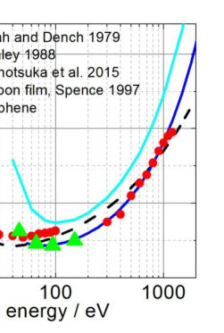
<figcaption class="paper-figure-caption"><b>Fig 1.</b> Fig. 1. Inelastic mean free path (IMFP) as a function of electron energy. (a) IMFP calculated by Seah and Dench [4], for carbon by Ashley [5], for graphite by Shinotsuka et al. [6], and experimentally measured as transmission through carbon films by Spence [7] and through graphene [2]. Adapted from [2].</figcaption>
</figure>
<figure class="paper-figure-card">
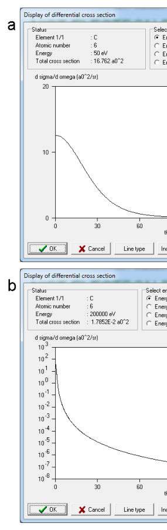
<figcaption class="paper-figure-caption"><b>Fig 2.</b> Fig. 2. Scattering differential cross-section (DCS) of electrons of (a) 50 eV and (b) 200 keV kinetic energy scattered by a carbon atom; calculated using the NIST database.</figcaption>
</figure>
<figure class="paper-figure-card">
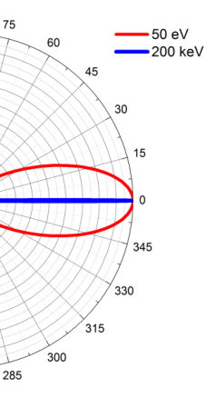
<figcaption class="paper-figure-caption"><b>Fig 3.</b> Fig. 3. Polar plot of the differential cross-section (DCS) distribution as a function of the scattering angle for electrons of 50 eV and 20 keV energies scattered at a carbon atom; calculated using the NIST database.</figcaption>
</figure>
<figure class="paper-figure-card">
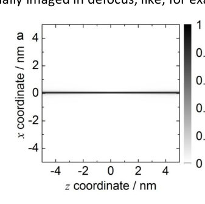
<figcaption class="paper-figure-caption"><b>Fig 4.</b> Fig. 4. Amplitude distributions (contrast inverted) of the point spread functions (PSF) for (a) 300 keV and (b) 100 eV energy electrons scattered by a point-like object. Adapted from [2].</figcaption>
</figure>
<figure class="paper-figure-card">
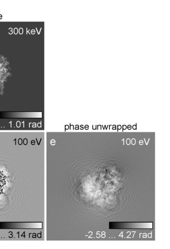
<figcaption class="paper-figure-caption"><b>Fig 5.</b> Fig. 5. Simulated complex-valued distribution of (a) ‒ (b) 300 keV and (c) ‒ (e) 100 eV electron exit wave after propagating through a lysozyme molecule. Scalebar, 1 nm. Adapted from [2].</figcaption>
</figure>
</div>

<p><strong>Summary.</strong> This work details the advantages of using ultra-low energy electrons (20–300 eV) for imaging and diffraction, highlighting their high sensitivity and low radiation damage compared to conventional TEM. It presents theoretical and experimental methods, such as Low-Energy Electron Holography, for mapping both the amplitude and phase information of biological and material structures.</p>
<p><strong>Why it may be interesting.</strong> The strong phase shift and the need for phase retrieval in LEEH provide a rich problem space connecting quantum wave mechanics to advanced experimental diagnostics, relevant to open quantum systems characterization.</p>
<details>
<summary>Detailed structure</summary>
<p><strong>Main problem.</strong> The paper addresses the unique physical properties and applications of ultra-low energy electrons (20–300 eV) for high-sensitivity imaging and diffraction, contrasting them with conventional high-energy electron microscopy.</p>
<p><strong>Main result.</strong> Low-energy electrons are superior for probing surfaces and biological samples due to low radiation damage, high sensitivity to local potentials, and the ability to perform phase-sensitive measurements via holography.</p>
<p><strong>Method.</strong> The discussion covers theoretical calculations of scattering amplitudes and differential cross-sections, alongside experimental techniques like Low-Energy Electron Diffraction (LEED) and Low-Energy Electron Holography (LEEH).</p>
<p><strong>Model / system.</strong> The physical system involves ultra-low energy electrons interacting with matter, such as graphene, DNA, and proteins. The analysis utilizes quantum mechanical principles to model electron scattering and wave propagation.</p>
<p><strong>Key observables.</strong> Contrast in amplitude and phase distributions, cross-correlation coefficient for radiation damage, and the complex-valued exit wave.</p>
<p><strong>Important parameters / regimes.</strong> Electron energy range (20–300 eV), wavelength ($\lambda \approx 1$ Å at 150 eV), and the Inelastic Mean Free Path (IMFP) which is minimized around 100 eV.</p>
<p><strong>Assumptions / limitations.</strong> The reconstruction of object properties from holograms and diffraction patterns is complicated by the strong phase shift acquired by low-energy electrons.</p>
<p><strong>Figures summary.</strong> Figures compare Point Spread Functions (PSF) and Differential Cross-Sections (DCS) for different energies, show simulated complex exit waves through proteins, and demonstrate non-destructive imaging of DNA over extended periods.</p>
<p><strong>Paper structure.</strong> The lecture progresses by detailing the unique properties of low-energy electrons (wavelength, scattering, damage), presenting the theoretical framework (calculations), and then discussing the application in specific techniques like LEED and LEEH.</p>
</details>
<details>
<summary>Abstract</summary>
<p>The lecture discusses the properties of low-energy electrons compared to the electrons of conventional energies employed in commercial transmission electron microscopes. Low-energy electron diffraction and low-energy electron holography principles and experimental schemes are presented and discussed.</p>
</details>
<p><sub><a href="#top">↑ back to top</a></sub></p>

<p><a id="paper-2608.18925"></a></p>
<h3 id="ultrafast-order-selective-electron-imaging-and-spectroscopy"><a href="http://arxiv.org/abs/2608.18925v1">Ultrafast order-selective electron imaging and spectroscopy</a></h3>
<p><strong>Authors:</strong> Jan Philipp Bange, Till Domröse, Claus Ropers, Stefan Mathias, Marcel Reutzel, .<br>
<strong>Type:</strong> experiment · <strong>Category:</strong> strongly correlated electrons · <strong>PDF:</strong> <a href="https://arxiv.org/pdf/2608.18925v1">https://arxiv.org/pdf/2608.18925v1</a><br>
<strong>Analysis basis:</strong> full PDF text, analyzed in chunks
<strong>Topic relevance:</strong> <code>quantum measurements</code> <strong>2/5</strong> · <code>Keldysh / 2PI / non-Gaussian methods</code> <strong>1/5</strong></p>
<div class="figure-strip-hint">↔ Scroll figures horizontally</div>
<div class="paper-figures-scroll">
<figure class="paper-figure-card">
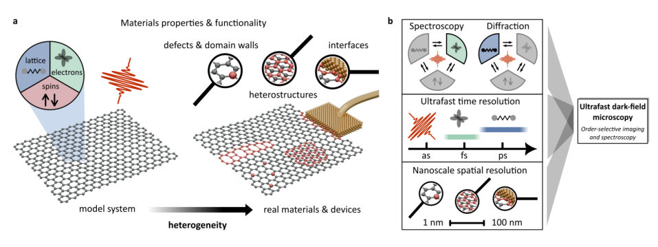
<figcaption class="paper-figure-caption"><b>Fig 1.</b> FIG. 1. Ultrafast order-selective imaging and spectroscopy. a In real materials and functional devices</figcaption>
</figure>
<figure class="paper-figure-card">
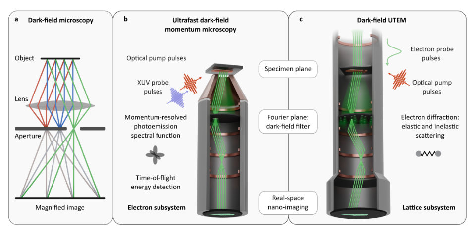
<figcaption class="paper-figure-caption"><b>Fig 2.</b> FIG. 2. Dark-field nano-imaging in ultrafast electron microscopy a Concept of dark-field microscopy.</figcaption>
</figure>
<figure class="paper-figure-card">
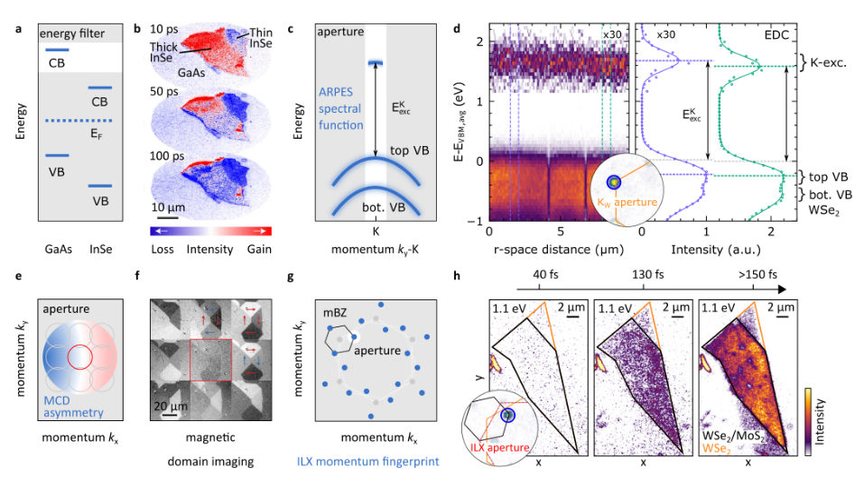
<figcaption class="paper-figure-caption"><b>Fig 3.</b> FIG. 3. Ultrafast dark-field photoelectron microscopy a Photoelectron microscopy with an energy</figcaption>
</figure>
<figure class="paper-figure-card">
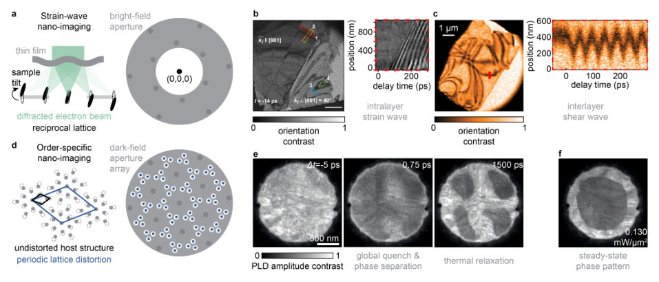
<figcaption class="paper-figure-caption"><b>Fig 4.</b> FIG. 4. Dark-field imaging in ultrafast transmission electron microscopy a A single-aperture filter</figcaption>
</figure>
<figure class="paper-figure-card">
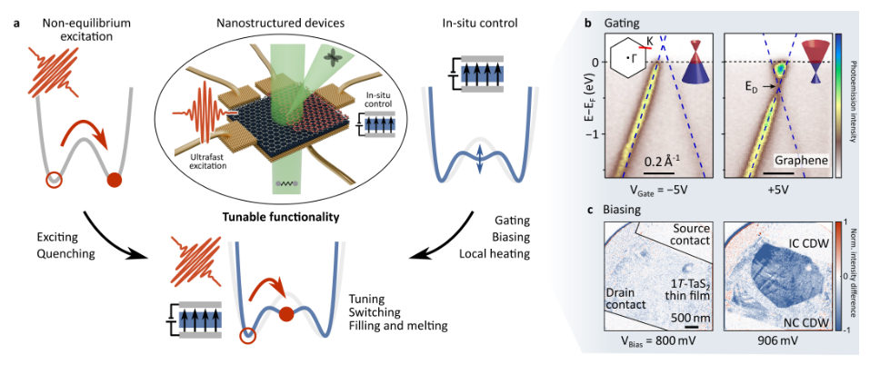
<figcaption class="paper-figure-caption"><b>Fig 5.</b> FIG. 5. Tunable emergent functionality in nanostructured devices a In-situ control of nanostructured</figcaption>
</figure>
</div>

<p><strong>Summary.</strong> This perspective reviews cutting-edge electron microscopy techniques designed to image ultrafast dynamics in quantum materials. By combining femtosecond time resolution with momentum-selective dark-field imaging, researchers can now microscopically track coupled electronic, lattice, and spin dynamics. This advancement opens new avenues for understanding non-equilibrium phenomena in nanoscale quantum devices.</p>
<p><strong>Why it may be interesting.</strong> The techniques discussed—especially momentum-resolved, time-dependent imaging—are crucial for mapping out the complex energy landscapes and phase transitions in strongly correlated electron systems, which is a major area of theoretical interest.</p>
<details>
<summary>Detailed structure</summary>
<p><strong>Main problem.</strong> The core challenge is developing techniques to simultaneously achieve high spatial resolution, ultrafast temporal resolution, and spectroscopic specificity (energy and momentum) to probe non-equilibrium dynamics in quantum materials.</p>
<p><strong>Main result.</strong> The review highlights that combining ultrafast dark-field electron microscopy (like femtosecond photoelectron momentum microscopy and UTEM) allows for momentum-selective nano-imaging of femtosecond dynamics, providing comprehensive insights into coupled electronic and structural subsystems.</p>
<p><strong>Method.</strong> The paper reviews advanced dark-field electron and photoelectron microscopy techniques, specifically femtosecond photoelectron momentum microscopy and ultrafast transmission electron microscopy.</p>
<p><strong>Model / system.</strong> The research focuses on technologically relevant quantum materials, nanostructures, and devices, including 2D heterostructures (e.g., WSe2/MoS2) and charge-density wave (CDW) systems (e.g., 1T-TaS2).</p>
<p><strong>Key observables.</strong> Electronic band structure, quasiparticle dispersion relations, structural order parameters (e.g., CDW amplitude), and ultrafast carrier dynamics.</p>
<p><strong>Important parameters / regimes.</strong> Femtosecond timescales, nanometer spatial resolution, and momentum-resolved observables (k-space).</p>
<p><strong>Assumptions / limitations.</strong> The primary limitation addressed is that traditional techniques often average over macroscopic areas or lack momentum resolution, necessitating the development of dark-field filtering approaches.</p>
<p><strong>Figures summary.</strong> Figure 1 illustrates the need for simultaneous nanometer spatial, ultrafast temporal, and spectroscopic sensitivity. Figure 2 details the concepts of dark-field filtering for momentum selection in both photoelectron microscopy and UTEM.</p>
<p><strong>Paper structure.</strong> The paper is structured as a review, first establishing the scientific need (Sec. I), then reviewing the general concepts of dark-field electron microscopy (Sec. II), detailing specific implementations in momentum microscopy (Sec. III), and finally presenting applications and outlook in UTEM (Sec. IV).</p>
</details>
<details>
<summary>Abstract</summary>
<p>Ultrafast pump-probe spectroscopies in energy and momentum have become indispensable for probing non-equilibrium dynamics in quantum materials, revealing pathways in ultrafast energy conversion and light-induced phase transitions. Different modalities uniquely access the coupled lattice, charge, and spin degrees of freedom that underpin the functionality of these materials. However, investigating technologically relevant nanoscale devices also requires high spatial resolution. Although electron microscopy provides nanometer-scale imaging, it frequently lacks the simultaneous ultrafast temporal resolution and spectroscopic specificity needed for such studies. In this perspective, we review recent advances in dark-field electron and photoelectron microscopy, focusing on two complementary techniques: femtosecond photoelectron momentum microscopy and ultrafast transmission electron microscopy. Their application enables comprehensive insights into the ultrafast dynamics of the electron, lattice, and spin subsystems. These order-selective electron imaging and spectroscopy techniques open broad scientific opportunities for a microscopic understanding of non-equilibrium phenomena in quantum materials, nanostructures and devices.</p>
</details>
<p><sub><a href="#top">↑ back to top</a></sub></p>

<p><a id="paper-2608.18384"></a></p>
<h3 id="isolating-the-natural-edges-of-bilayer-graphene-in-gate-defined-mesoscopic-devices"><a href="http://arxiv.org/abs/2608.18384v1">Isolating the natural edges of bilayer graphene in gate-defined mesoscopic devices</a></h3>
<p><strong>Authors:</strong> Francesco Blanda, Grazia Raciti, Thilo Glatzel, Aurin Strathmann, Fabrizio Volante, Kenji Watanabe, Takashi Taniguchi, Ilaria Zardo, Thomas Ihn, Klaus Ensslin, Andrea Hofmann<br>
<strong>Type:</strong> experiment · <strong>Category:</strong> other · <strong>PDF:</strong> <a href="https://arxiv.org/pdf/2608.18384v1">https://arxiv.org/pdf/2608.18384v1</a><br>
<strong>Analysis basis:</strong> full PDF text, analyzed in chunks
<strong>Topic relevance:</strong> <code>quantum measurements</code> <strong>2/5</strong></p>
<div class="figure-strip-hint">↔ Scroll figures horizontally</div>
<div class="paper-figures-scroll">
<figure class="paper-figure-card">
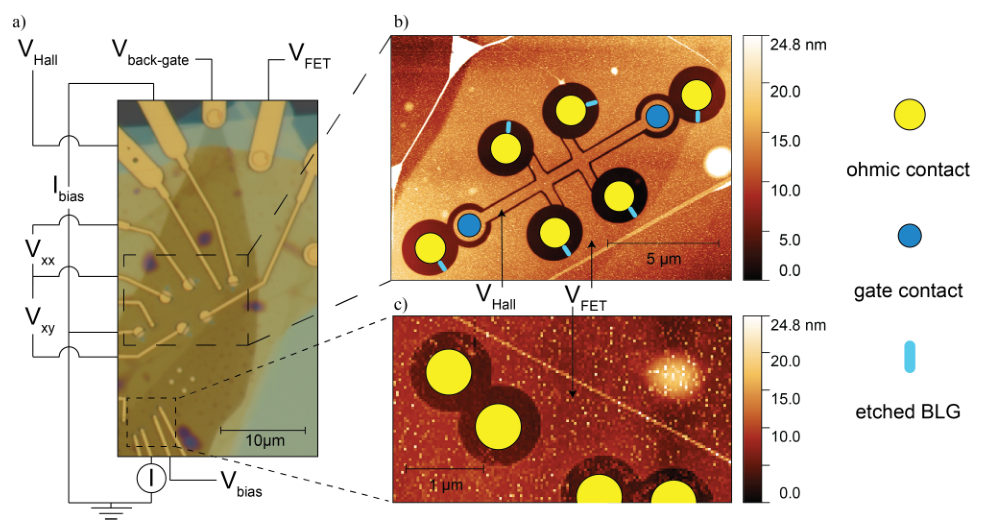
<figcaption class="paper-figure-caption"><b>Fig 1.</b> FIG. 1. Measured devices. a) Optical microscope image of the finished devices and schematics of the setup. b) Atomic force micrograph of the Hall-bar after the patterning of the graphite top gate, in yellow the position of the ohmic contacts, in blue the contacts to the Hall-bar gate, and in light blue the cut in the BLG to facilitate equilibration. The Hall-bar gate is separated from the FET gate by a 90 nm-wide gap. c) Atomic force micrograph of the 800 nm-wide FET, in yellow the position of the ohmic contacts.</figcaption>
</figure>
<figure class="paper-figure-card">
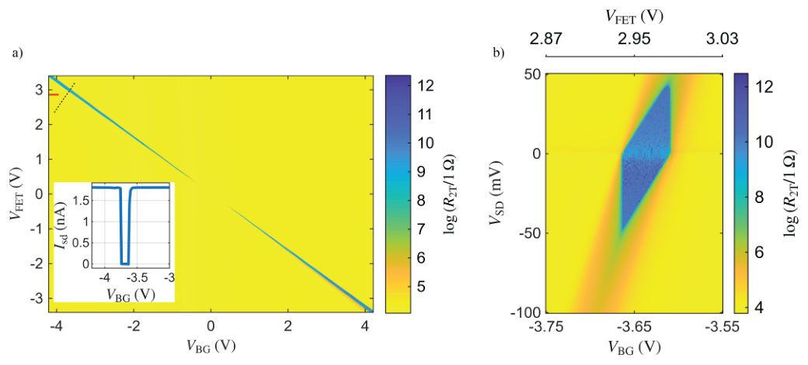
<figcaption class="paper-figure-caption"><b>Fig 2.</b> FIG. 2. Band-gap measurements of the FET. a) Two-terminal resistance as a function of VFET and VBG. The diagonal, highly insulating line appears when the Fermi level lies in the gap opened by the displacement field. Inset: measured current as a function of VBG at a fixed top gate voltage as indicated by the red line. b) Finite bias spectroscopy at fixed displacement field as indicated by the dotted line in a).</figcaption>
</figure>
<figure class="paper-figure-card">
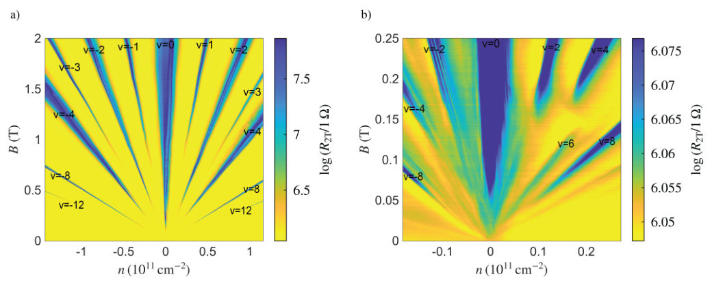
<figcaption class="paper-figure-caption"><b>Fig 3.</b> FIG. 3. Magnetotransport measurement of the FET at D = 0 V/nm. a) Landau fan from 0 T to 2 T, with the visible filling factors labeled in black. b) Zoom-in of the low field and low density region.</figcaption>
</figure>
<figure class="paper-figure-card">
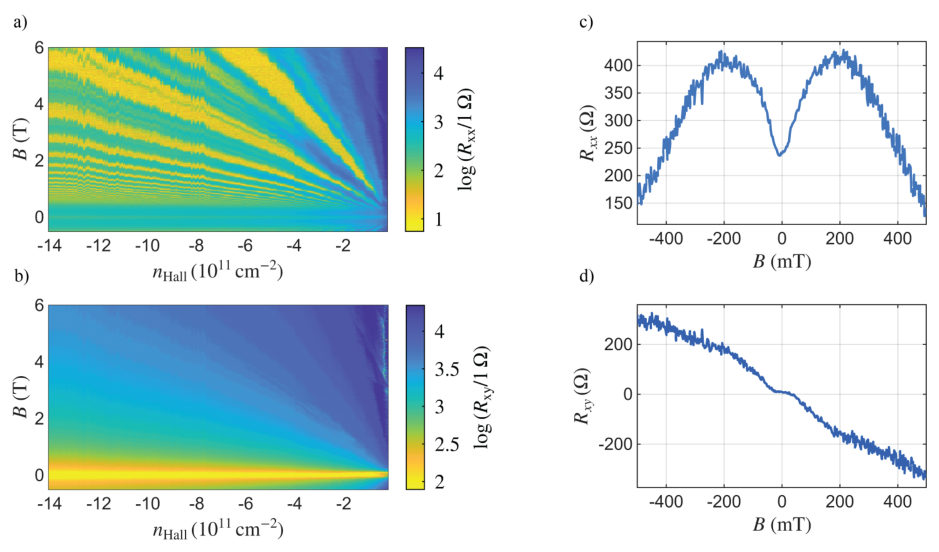
<figcaption class="paper-figure-caption"><b>Fig 4.</b> FIG. 4. Magnetotransport measuremenet of the Hall-bar at D = 0.1 V / nm. a) Landau fan in Rxx. b) Landau fan in Rxy. c) Low-field trace of Rxx taken at nHall = 1.23 × 1012 cm−2, showing the mesoscopic magnetoresistance peaks. d) Low-field trace of Rxy taken at nHall = 1.23 × 1012 cm−2, showing the quenching of the Hall resistance.</figcaption>
</figure>
<figure class="paper-figure-card">
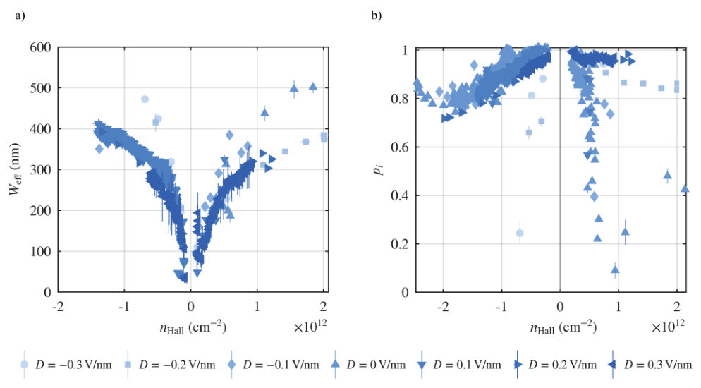
<figcaption class="paper-figure-caption"><b>Fig 5.</b> FIG. 5. Hall-bar analysis. a) Effective width Weff(n) extracted as a function of density and plotted for different displacement fields. b) Scattering parameter pi(n) calculated for each density and plotted for different displacement fields.</figcaption>
</figure>
</div>

<p><strong>Summary.</strong> This work reports on the fabrication and characterization of bilayer graphene mesoscopic devices, achieving record quantum mobility by electrostatically isolating the active channel. Furthermore, the study uses KPFM to map surface potentials, demonstrating that substrate plasma treatments critically control the confinement and persistence of injected charge at the graphene/oxide interface.</p>
<p><strong>Why it may be interesting.</strong> The combination of high-precision quantum transport measurements with nanoscale electrostatic characterization (KPFM) provides a comprehensive view of how device fabrication and substrate chemistry dictate fundamental quantum electronic properties in 2D materials.</p>
<details>
<summary>Detailed structure</summary>
<p><strong>Main problem.</strong> The study aims to isolate and characterize the electronic properties of bilayer graphene (BLG) in mesoscopic devices by eliminating conduction paths through natural flake edges.</p>
<p><strong>Main result.</strong> The authors successfully demonstrated that electrostatic definition isolates the active region, yielding high quantum mobility ($\sim 2.5 	imes 10^6 	ext{ cm}^2/	ext{Vs}$) in FET geometries, while also characterizing how substrate treatments affect charge confinement using KPFM.</p>
<p><strong>Method.</strong> The work combines advanced magnetotransport measurements (Hall-bar and FET) to probe quantum transport with Kelvin Probe Force Microscopy (KPFM) to map local electrostatic potentials after various plasma treatments.</p>
<p><strong>Model / system.</strong> The physical system is bilayer graphene fabricated on various oxide substrates ($   ext{SiO}_2$, plasma-treated $   ext{h-BN}$). Measurements probe mesoscopic transport, Landau quantization, and the electrostatic potential landscape.</p>
<p><strong>Key observables.</strong> Quantum mobility ($\mu_q$), quantum lifetime ($    au_q$), Landau level quantization, and Contact Potential Difference ($\Delta V_{   ext{CPD}}$).</p>
<p><strong>Important parameters / regimes.</strong> Magnetic field ($B$), carrier density ($n$), and plasma treatment type ($   ext{N}_2+   ext{O}_2$ vs. $ ext{CHF}_3/ ext{O}_2$).</p>
<p><strong>Assumptions / limitations.</strong> The analysis assumes that the measured resistance in the gated region is equivalent to the longitudinal resistance in a Corbino geometry for some analyses, and that KPFM measurements can distinguish between intrinsic material potential and trapped surface charges.</p>
<p><strong>Figures summary.</strong> Figures show magnetotransport data (Landau fans, $R_{xx}/R_{xy}$ traces) for both FET and Hall-bar geometries, alongside KPFM maps illustrating charge confinement differences on graphene after various plasma treatments.</p>
<p><strong>Paper structure.</strong> The paper progresses from demonstrating clean quantum transport in the Hall-bar/FET geometry (magnetotransport) to analyzing edge scattering effects, and finally uses KPFM to investigate the fundamental electrostatic control over the graphene/h-BN interfaces.</p>
</details>
<details>
<summary>Abstract</summary>
<p>We introduce a graphite-gated architecture for bilayer graphene devices in which the active device is completely isolated from the natural graphene edges. Using a single patterned graphite-gate layer, we realize a fully electrostatically defined Hall-bar. Longitudinal and Hall measurements reveal mesoscopic transport features, including Hall-effect quenching and magnetoresistance peaks associated with boundary scattering. The dependence of the mesoscopic features on the carrierdensity shows that the effective channel width increases with the Fermi level and the electrostatic confinement at the gate-defined boundaries, and indicates that the carriers scatter at the electrostatic boundary. Raman spectroscopy and Kelvin probe force microscopy suggest that this boundary is disordered due to the used fabrication methods. Comparably, the quantum mobility in a fieldeffect transistor fabricated with the same architecture is not limited by boundary scattering and the visibility of quantum oscillations down to 4 mT suggests a record value of 2.5 x 10^6 cm2/Vs.</p>
</details>
<p><sub><a href="#top">↑ back to top</a></sub></p>

<p><a id="paper-2608.18370"></a></p>
<h3 id="interface-controlled-spin-orbit-torques-in-rare-earth-synthetic-ferrimagnets-probed-by-sagnac-magneto-optics-and-harmonic-hall-measurements"><a href="http://arxiv.org/abs/2608.18370v1">Interface-Controlled Spin-Orbit Torques in Rare-Earth Synthetic Ferrimagnets Probed by Sagnac Magneto-Optics and Harmonic Hall Measurements</a></h3>
<p><strong>Authors:</strong> Akilan K, Koral Aykin, Jose-Luis Ampuero, Laurent Badie, Stephane Mangin, Sébastien Petit-Watelot, Michel Hehn, Andrew D. Kent, J. -Carlos Rojas-Sánchez<br>
<strong>Type:</strong> experiment · <strong>Category:</strong> other · <strong>PDF:</strong> <a href="https://arxiv.org/pdf/2608.18370v1">https://arxiv.org/pdf/2608.18370v1</a><br>
<strong>Analysis basis:</strong> full PDF text, analyzed in chunks
<strong>Topic relevance:</strong> <code>analog quantum simulation</code> <strong>1/5</strong> · <code>driven-dissipative phase transition</code> <strong>1/5</strong> · <code>interference shaping light</code> <strong>1/5</strong> · <code>quantum measurements</code> <strong>1/5</strong> · <code>quantum optics experiment</code> <strong>1/5</strong></p>
<div class="figure-strip-hint">↔ Scroll figures horizontally</div>
<div class="paper-figures-scroll">
<figure class="paper-figure-card">
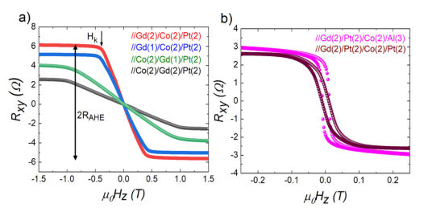
<figcaption class="paper-figure-caption"><b>Fig 1.</b> FIG. 1. DC measurement of anomalous Hall resistance at room temperature as a function of out-of-plane applied field in 20 µm width Hall bar devices in a) Co/Gd SFiM capped with Pt. b) Pt-intercalated SFiMP t, Gd/Pt/Co, with Al and Pt capping layers as displayed. The Gd/Pt/Co layers have a higher perpendicular anisotropy component</figcaption>
</figure>
<figure class="paper-figure-card">
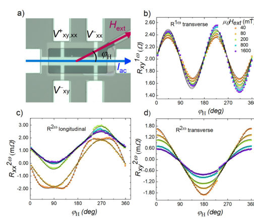
<figcaption class="paper-figure-caption"><b>Fig 2.</b> FIG. 2. Magnetotransport measurements in a Co(2)/Gd(1)/Pt(2) Hall bar of width 20 µm at a fixed AC current of 1 mA. Simultaneous first and second harmon- ics of the Hall and longitudinal resistances are shown for an in-plane angular dependence where ϕ is the angle between magnetization and current channel. The solid lines are fits to the equations Eqs. 1-3.</figcaption>
</figure>
<figure class="paper-figure-card">
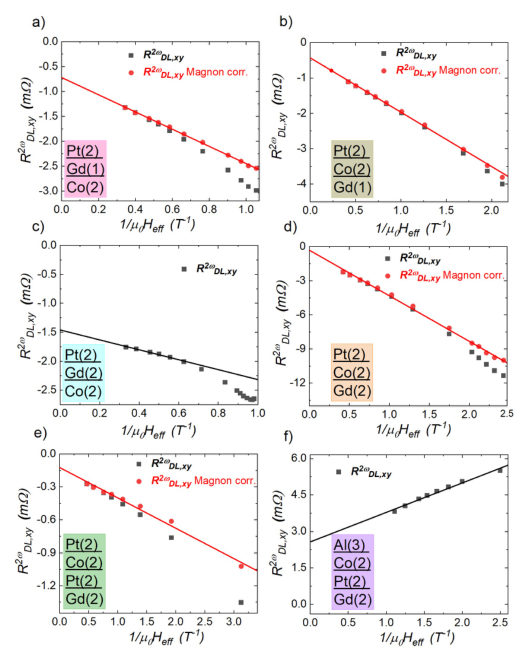
<figcaption class="paper-figure-caption"><b>Fig 3.</b> FIG. 3. Harmonic Hall resistance analysis of the DL resis- tances as a function of (µ0Heff)−1 for an applied AC current of 1 mA peak. The correction of the non-linearity is performed in the samples a) Co(2)/Gd(1)/Pt(2), b) Gd(1)/Co(2)/Pt(2), d) Gd(2)/Co(2)/Pt(2) and e) Gd(2)/Pt(2)/Co(2)/Pt(2). The substrate is on the left.The black and red linear fits are per- formed for the uncorrected and corrected field points respec- tively. Whereas in the samples c) Co(2)/Gd(2)/Pt(2) and f) Gd(2)/Pt(2)/Co(2)/Al(3) the linear fits (black) are done without applying the magnon correction protocol (5).</figcaption>
</figure>
<figure class="paper-figure-card">

<figcaption class="paper-figure-caption"><b>Fig 4.</b> Figure 3 summarizes the determination of BDL af- ter applying the magnon-correction protocol to the in- vestigated Co/Gd-based heterostructures. Two samples constitute exceptions. For Co(2)/Gd(2)/Pt(2), the ex- tracted Rmag is essentially independent of magnetic field, preventing a consistent scaling procedure; consequently, the reported value corresponds to the uncorrected anal- ysis and should be regarded as an upper estimate. In</figcaption>
</figure>
<figure class="paper-figure-card">
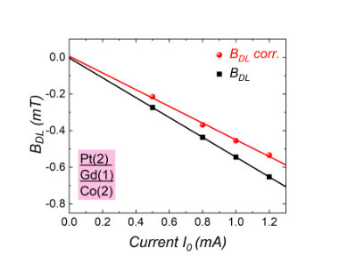
<figcaption class="paper-figure-caption"><b>Fig 5.</b> FIG. 4. The correction is performed for measurements at different applied currents to obtain a consistent correction factor Cmag for all applied currents. BDL corrected (red) and uncorrected (black) for all currents is shown for the sample //Co(2)/Gd(1)/Pt(2)</figcaption>
</figure>
</div>

<p><strong>Summary.</strong> This work investigates Spin-Orbit Torque (SOT) in rare-earth synthetic ferrimagnets using a combination of Sagnac magneto-optics and harmonic Hall measurements. By comparing these techniques, the authors provide a robust, quantitative determination of the SOT effective field. The findings establish these rare-earth systems as excellent platforms for designing low-power spintronic devices through precise interface engineering.</p>
<p><strong>Why it may be interesting.</strong> While focused on condensed matter magnetism, the precise measurement of torque and magnetization dynamics using optical methods (MOKE) and transport measurements provides fundamental insights into interfacial coupling and spin-charge conversion, which are relevant to open quantum systems modeling.</p>
<details>
<summary>Detailed structure</summary>
<p><strong>Main problem.</strong> The paper aims to accurately quantify the Spin-Orbit Torque (SOT) in magnetic thin films, which is crucial for developing energy-efficient spintronic devices.</p>
<p><strong>Main result.</strong> The study demonstrates that rare-earth-based synthetic ferrimagnets are a versatile platform for engineering SOT phenomena, achieving current-induced switching at low current densities via interface engineering.</p>
<p><strong>Method.</strong> The research employs complementary techniques, combining Sagnac magneto-optical interferometry with harmonic Hall measurements to independently and quantitatively determine the damping-like SOT effective field.</p>
<p><strong>Model / system.</strong> The physical system under investigation consists of Co/Gd-based synthetic ferrimagnets (SFiMs) and related heterostructures (e.g., Gd/Pt/Co/Al). The measurements probe the magnetization dynamics and torque generation at rare-earth/heavy-metal interfaces.</p>
<p><strong>Key observables.</strong> Damping-like SOT effective field ($\xi_{DL}$), current-induced magnetization tilting (measured optically), and various Hall/Kerr resistances ($R_{2\omega}^{xy}$, $  heta_K$).</p>
<p><strong>Important parameters / regimes.</strong> Current densities ($\ge 8-10 	ext{ MA/cm}^2$), Gd layer thickness, and multilayer stacking order.</p>
<p><strong>Assumptions / limitations.</strong> The harmonic Hall analysis requires careful correction for nonlinear magnon contributions, and initial analyses sometimes incorrectly assumed $  ext{M}<em _parallel="\parallel">{    ext{eff}} \gg   ext{H}</em>$.</p>
<p><strong>Figures summary.</strong> Figures illustrate AHE vs. field measurements, magnetotransport data showing angular dependence, and Kerr rotation vs. current/field, demonstrating the dependence of anisotropy on device geometry.</p>
<p><strong>Paper structure.</strong> The paper develops the need for accurate SOT quantification, compares Sagnac MOKE results against harmonic Hall analysis, details the influence of interface engineering (Gd layer) on torque generation, and concludes by showing successful SOT switching in engineered structures.</p>
</details>
<details>
<summary>Abstract</summary>
<p>Spin-orbit torque (SOT) provides an efficient route for manipulating magnetization in spintronic devices, and its accurate quantification is essential. Here, we investigate Co/Gd-based synthetic ferrimagnets using complementary magnetotransport and magneto-optical techniques. We use a Sagnac magneto-optical interferometry method to directly quantify current-induced magnetization tilting and extract the damping-like SOT effective field. The Sagnac measurements show good agreement with harmonic Hall analysis across different Co/Gd and Gd/Pt/Co heterostructures, providing a quantitative determination of the damping-like SOT effective field that does not rely on electrical transport signatures. By varying the Gd thickness and multilayer stacking order, we demonstrate that the damping-like torque is strongly influenced by spin transport and angular momentum conversion at rare-earth and heavy-metal interfaces. The observation of a finite torque in Gd/Pt/Co/Pt structures, where conventional Pt spin Hall contributions are expected to compensate, highlights the active role of the Gd layer in SOT generation. Furthermore, interface engineering enables perpendicular magnetic anisotropy in Gd/Pt/Co/Al heterostructures with a 2-nm-thick Co layer, allowing current-induced SOT switching at current densities of 8-10 MA/cm$^2$. These results establish rare-earth-based synthetic ferrimagnets as a versatile platform for engineering spin-orbit phenomena and optimizing low-power spintronic devices.</p>
</details>
<p><sub><a href="#top">↑ back to top</a></sub></p>

<p><a id="paper-2608.18741"></a></p>
<h3 id="a-miniature-evaporator-for-in-operando-deposition-of-isolated-atoms-in-a-low-temperature-scanning-tunneling-microscope"><a href="http://arxiv.org/abs/2608.18741v1">A miniature evaporator for in-operando deposition of isolated atoms in a low-temperature scanning tunneling microscope</a></h3>
<p><strong>Authors:</strong> Jeongmin Oh, Hermann Osterhage, Vasily Cherepanov, Sven Just, Denis Krylov, F. Stefan Tautz, Taner Esat, Ruslan Temirov<br>
<strong>Type:</strong> experiment · <strong>Category:</strong> other · <strong>PDF:</strong> <a href="https://arxiv.org/pdf/2608.18741v1">https://arxiv.org/pdf/2608.18741v1</a><br>
<strong>Analysis basis:</strong> full PDF text, analyzed in chunks
<strong>Topic relevance:</strong> <code>analog quantum simulation</code> <strong>1/5</strong> · <code>quantum measurements</code> <strong>1/5</strong></p>
<div class="figure-strip-hint">↔ Scroll figures horizontally</div>
<div class="paper-figures-scroll">
<figure class="paper-figure-card">
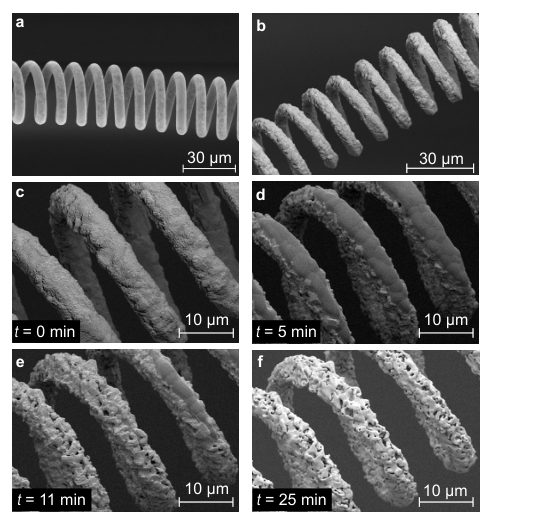
<figcaption class="paper-figure-caption"><b>Fig 1.</b> FIG. 2. SEM images of the evaporator filament. (a) Bare W filament after annealing and before Fe deposition. (b) Filament after coating with Fe by evaporation. (c–f) Higher-magnification images showing the initially fine-grained polycrystalline Fe film and its morpholog- ical evolution during resistive heating at 13 mA: (c) before heating, and after heating for (d) 5 min, (e) 11 min, and (f) 25 min.</figcaption>
</figure>
<figure class="paper-figure-card">
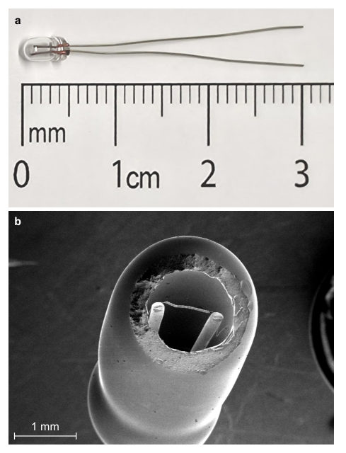
<figcaption class="paper-figure-caption"><b>Fig 2.</b> FIG. 1. (a) Photograph of the miniature incandescent lamp used to fabricate the evaporation source. (b) Scanning electron microscopy (SEM) image of the lamp after opening the glass bulb, exposing the tungsten filament.</figcaption>
</figure>
<figure class="paper-figure-card">
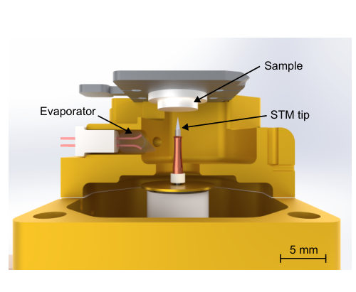
<figcaption class="paper-figure-caption"><b>Fig 3.</b> FIG. 3. Three-dimensional cutaway model of the millikelvin STM head showing the integrated evaporation sources, the sample, and the STM tip.</figcaption>
</figure>
<figure class="paper-figure-card">
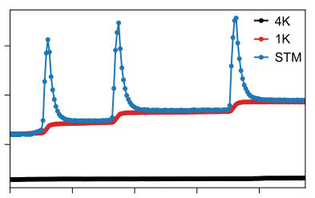
<figcaption class="paper-figure-caption"><b>Fig 4.</b> FIG. 5. Temperature of the STM body (blue), 1 K pot (red) and 4 K bath (black) during three consecutive Fe evaporation cycles, each performed at Ifil = 13 mA for 3 min.</figcaption>
</figure>
<figure class="paper-figure-card">
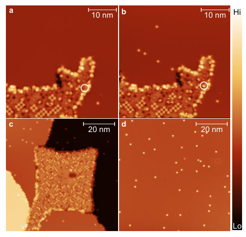
<figcaption class="paper-figure-caption"><b>Fig 5.</b> FIG. 4. (a) Constant-current STM image of the sample before Fe deposition. (b) The same surface area after Fe deposition. Five new atoms are visible on Ag(100), and one is visible on the MgO island (circle). (c,d) Representative constant-current STM images acquired after deposition, showing the Fe coverage and the cleanliness of the MgO/Ag(100) surface. Imaging parameters: U = 100 mV and I = 50 pA for (a,b), 20 pA for (c), and 10 pA for (d).</figcaption>
</figure>
</div>

<p><strong>Summary.</strong> The paper presents a novel, compact evaporator source integrated directly into a millikelvin STM head to overcome geometric limitations in cryogenic deposition. This setup allows for the controlled, <em>in-operando</em> deposition of isolated atoms, such as Fe, onto surfaces while maintaining high spatial resolution. This advancement is critical for performing atomic-scale experiments in extreme cryogenic environments.</p>
<p><strong>Why it may be interesting.</strong> This work directly advances the experimental capability of manipulating quantum systems (adatoms) at ultra-low temperatures by solving a major engineering bottleneck (deposition access) in cryogenic STM setups, which is crucial for studying surface quantum phenomena.</p>
<details>
<summary>Detailed structure</summary>
<p><strong>Main problem.</strong> Depositing dilute atomic ensembles onto cold samples in low-temperature scanning tunneling microscopes (STM) is challenging due to restricted internal geometries and radiation shields.</p>
<p><strong>Main result.</strong> The authors successfully integrated a compact, low-power miniature evaporator directly into a millikelvin STM head, enabling repeated, <em>in-operando</em> deposition of isolated Fe atoms while maintaining atomic-scale surface access.</p>
<p><strong>Method.</strong> They used a miniature incandescent lamp source coated with Fe film to deposit atoms onto MgO/Ag(100) substrates while operating the STM near 5 K, characterizing the deposition using STM imaging and IETS spectroscopy.</p>
<p><strong>Model / system.</strong> The physical system is a miniature evaporator source integrated into a millikelvin STM head. Deposition occurs on crystalline substrates like MgO/Ag(100) at cryogenic temperatures, allowing for atomic-scale manipulation.</p>
<p><strong>Key observables.</strong> Symmetric inelastic steps near $\pm 14 	ext{ mV}$ in dI/dV spectra (identifying Fe), local deposition flux ($\approx 1.5 	imes 10^{-5} 	ext{ nm}^{-2} 	ext{ s}^{-1}$), and preserved atomic-scale surface access ($< 5 	ext{ nm}$ lateral displacement).</p>
<p><strong>Important parameters / regimes.</strong> Operating temperature near 5 K, low thermal load ($\Delta T \approx 2 	ext{ K}$), and a nominal evaporator lifetime of $\sim 150 	ext{ h}$.</p>
<p><strong>Assumptions / limitations.</strong> The lifetime estimate assumes a constant emission rate and unit sticking coefficient; the fixed evaporator design overcomes geometric constraints of conventional external sources.</p>
<p><strong>Figures summary.</strong> Figure 1 shows the miniature lamp source; Figure 2 tracks the Fe film morphology; Figure 3 illustrates the 3D cutaway model of the integrated STM head.</p>
<p><strong>Paper structure.</strong> The paper introduces the challenge of cryogenic deposition access, presents the novel integrated evaporator design, details the experimental procedure (deposition and characterization), and concludes by demonstrating the feasibility of repeated, low-flux deposition.</p>
</details>
<details>
<summary>Abstract</summary>
<p>Depositing dilute atomic ensembles onto cold samples is challenging in low-temperature scanning tunneling microscopes (STM) because radiation shields and restricted internal geometries often preclude a direct deposition path, particularly in instruments designed for millikelvin operation. We present a compact, milliwatt-range evaporation source fabricated from a commercial miniature incandescent lamp and integrated directly into a millikelvin STM head. The exposed tungsten filament is coated with a micrometre-thick Fe film and positioned about 1 cm from the sample. We deposit isolated Fe atoms onto MgO/Ag(100) while operating the microscope near 5 K. Evaporation increases the STM-body temperature by only about 2 K, and the same nanoscopic surface region can be readily scanned after deposition with a lateral displacement of less than 5 nm. Differential-conductance spectra displaying symmetric inelastic steps near $\pm$14 mV identify the deposited atoms on MgO as Fe. From STM images, we estimate a local deposition flux of $1.5\times10^{-5}~\mathrm{nm^{-2}\,s^{-1}}$, corresponding to a nominal evaporator lifetime of ~150 h. The fixed evaporator enables repeated low-flux deposition without a room-temperature line of sight, the need for movable radiation shields, or mechanical evaporator access after cooldown, while preserving access to the same atomic-scale surface region before and after deposition.</p>
</details>
<p><sub><a href="#top">↑ back to top</a></sub></p>

<p><a id="paper-2608.18885"></a></p>
<h3 id="spectral-fingerprints-of-resonant-defect-scattering-by-substitutional-mn-in-graphene"><a href="http://arxiv.org/abs/2608.18885v1">Spectral Fingerprints of Resonant Defect Scattering by Substitutional Mn in Graphene</a></h3>
<p><strong>Authors:</strong> Ahmed Samir Lotfy, Zviadi Zarkua, Renan Villarreal, Rikkie Joris, Muhammad Saad, Koen van Stiphout, Karina Landivar, Steven Brems, Giovanni Di Santo, Aleksandr Seliverstov, Simona Achilli, Luca Petaccia, Lino M. C. Pereira<br>
<strong>Type:</strong> both · <strong>Category:</strong> disordered systems and neural networks · <strong>PDF:</strong> <a href="https://arxiv.org/pdf/2608.18885v1">https://arxiv.org/pdf/2608.18885v1</a><br>
<strong>Analysis basis:</strong> full PDF text, analyzed in chunks
<strong>Topic relevance:</strong> <code>Keldysh / 2PI / non-Gaussian methods</code> <strong>1/5</strong> · <code>quantum measurements</code> <strong>1/5</strong></p>
<div class="figure-strip-hint">↔ Scroll figures horizontally</div>
<div class="paper-figures-scroll">
<figure class="paper-figure-card">
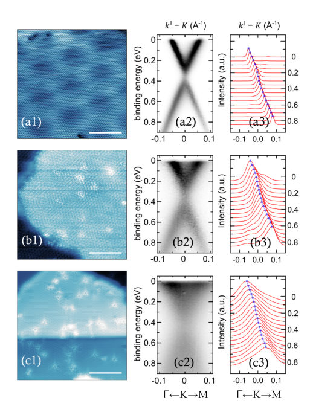
<figcaption class="paper-figure-caption"><b>Fig 1.</b> FIG. 1. STM and ARPES for (a) nonimplanted graphene/Cu(111), (b) nMn = 0.177 ± 0.013%, and (c) nMn = 0.44 ± 0.03%. (a1–c1) STM topographies (scale bar, 5 nm) acquired at (Itun, Vsample) = (0.10 nA, −0.30 V), (0.25 nA, 0.15 V), and (105.17 nA, 0.23 V), respectively. (a2– c2) ARPES spectra near K along Γ →K →M, obtained by summing separately acquired s- and p-polarization data. (a3– c3) Stacked momentum distribution curves (MDCs) from the s-polarization data used in the quantitative analysis. The red traces are individual MDCs at successive binding energies, and the blue symbols connected by a line mark the fitted MDC peak positions.</figcaption>
</figure>
<figure class="paper-figure-card">
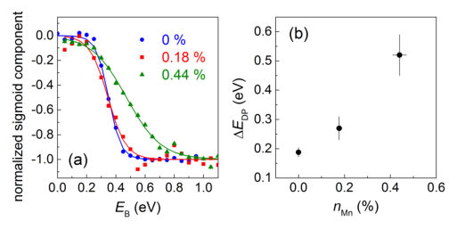
<figcaption class="paper-figure-caption"><b>Fig 2.</b> FIG. 3. Dirac point stretching. (a) kMDC(EB) after subtrac- tion of the fitted linear dispersion and normalization by the absolute sigmoidal amplitude (nMn is given in %; the symbols are extracted values and solid curves are the sigmoidal fits). (b) Stretching ∆EDP, defined as the 10–90% width of the fit- ted sigmoidal step, versus substitutional Mn concentration. Horizontal error bars in (b) denote the STM-derived concen- tration uncertainties; vertical error bars denote one standard deviation uncertainties propagated from the sigmoidal fits.</figcaption>
</figure>
<figure class="paper-figure-card">
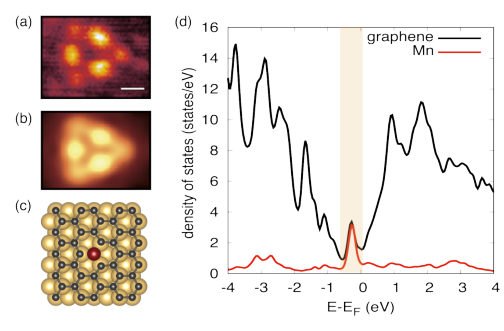
<figcaption class="paper-figure-caption"><b>Fig 3.</b> FIG. 2. Atomic structure and calculated electronic signa- ture of substitutional Mn in graphene/Cu(111). (a) Exper- imental constant-current STM image of an isolated defect (Itun = 0.48 nA, Vsample = 0.42 V; scale bar, 0.2 nm). (b) DFT-based constant-height STM simulation 3 ˚A above graphene. (c) Structural model, with Mn occupying a single carbon vacancy. (d) Density of states projected onto graphene (black) and Mn (red), referenced to EF. The Mn-derived peak and finite graphene spectral weight in the region of the Dirac point (around −0.3 eV) are consistent with hybridiza- tion; shading marks the relevant energy range.</figcaption>
</figure>
<figure class="paper-figure-card">

<figcaption class="paper-figure-caption"><b>Fig 4.</b> FIG. 4. Momentum broadening. (a) Lorentzian MDC FWHM ∆kL versus binding energy for the three samples (nMn is given in %). (b) Energy-averaged ∆kL versus nMn; horizontal error bars denote the STM-derived uncertainty in nMn, and verti- cal error bars denote one standard deviation of ∆kL over the analyzed binding-energy range. The line is a linear fit whose slope gives the effective two-dimensional scattering cross sec- tion.</figcaption>
</figure>
</div>

<p><strong>Summary.</strong> This work uses a combination of STM and ARPES on Mn-doped graphene to characterize disorder. By analyzing the spectral broadening of the Dirac cone, the authors distinguish the signature of strong resonant scattering from other types of disorder. The findings establish a quantitative method for measuring defect scattering strength in graphene, which is vital for controlling electronic properties in nanoscale devices.</p>
<p><strong>Why it may be interesting.</strong> The quantitative link between a structurally identified defect (STM) and the resulting spectral broadening (ARPES) provides a powerful, measurable diagnostic tool for understanding disorder in 2D electron systems, which is crucial for designing quantum materials.</p>
<details>
<summary>Detailed structure</summary>
<p><strong>Main problem.</strong> The paper aims to experimentally and theoretically test the spectral fingerprints associated with resonant defect scattering in graphene caused by substitutional Manganese (Mn) impurities.</p>
<p><strong>Main result.</strong> The observed spectral broadening ($\Delta E_{	ext{DP}}$ and $\Delta k_L$) scales linearly with Mn concentration, providing strong evidence that Mn acts as a strong resonant scatterer in graphene.</p>
<p><strong>Method.</strong> The study combines Angle-Resolved Photoemission Spectroscopy (ARPES) measurements with Scanning Tunneling Microscopy (STM) to characterize the defect concentration and spectral signatures.</p>
<p><strong>Model / system.</strong> The system is graphene/Cu(111) doped with substitutional Mn point defects. Theoretical modeling uses DFT to predict local electronic structure, while ARPES measures the quasiparticle spectral function $A(\mathbf{k}, \omega)$.</p>
<p><strong>Key observables.</strong> Dirac point stretching ($\Delta E_{	ext{DP}}$), momentum broadening ($\Delta k_L$), and the effective scattering cross section ($\sigma_{eff}$).</p>
<p><strong>Important parameters / regimes.</strong> Mn concentration ($n_{	ext{Mn}}$), temperature (20 K, 78 K), and photon energy ($\hbar
u = 34  ext{ eV}$).</p>
<p><strong>Assumptions / limitations.</strong> The linear increase of $\Delta k_L$ with $n_{	ext{Mn}}$ is assumed to be dominated by single-particle scattering from the substitutional defects.</p>
<p><strong>Figures summary.</strong> Figures show STM images confirming Mn placement, DFT calculations predicting Mn-related spectral weight, and ARPES spectra comparing nonimplanted, low-concentration, and high-concentration samples, illustrating the progressive spectral changes.</p>
<p><strong>Paper structure.</strong> The paper progresses by first establishing the theoretical framework distinguishing resonant vs. non-resonant scattering, then using STM to quantify the defect concentration, and finally applying ARPES to measure the correlated spectral changes ($\Delta E_{	ext{DP}}$ and $\Delta k_L$) that confirm the resonant scattering mechanism.</p>
</details>
<details>
<summary>Abstract</summary>
<p>Using substitutional Mn in graphene/Cu(111) as a model point defect, we combine scanning tunneling microscopy (STM) and angle-resolved photoemission spectroscopy (ARPES) to test the predicted fingerprints of resonant scattering. As the Mn concentration increases to 0.44%, the Dirac point stretching reaches 0.52 eV, while momentum broadening remains energy independent. These spectral fingerprints classify substitutional Mn as a strong resonant scatterer and establish the combination of STM and ARPES as a powerful approach to identify and characterize resonant disorder in graphene.</p>
</details>
<p><sub><a href="#top">↑ back to top</a></sub></p>

<p><a id="paper-2608.19099"></a></p>
<h3 id="large-field-free-superconducting-diode-effect-with-nonmonotonic-polarity-reversals-in-nbsemath820mathcrbrmath821math-heterostructures"><a href="http://arxiv.org/abs/2608.19099v1">Large Field-Free Superconducting Diode Effect with Nonmonotonic Polarity Reversals in NbSe$_2$/CrBr$_3$ Heterostructures</a></h3>
<p><strong>Authors:</strong> Shengbiao Sun, Lang Xiao, Chenghao Shen, Bowen Hao, Jia-Peng Peng, Ziye Zhu, Feiyue Wang, Qilin Han, Ya-Qing Bie, Shuo Wang, Tong Zhou, Dapeng Yu, Ben-Chuan Lin<br>
<strong>Type:</strong> both · <strong>Category:</strong> other · <strong>PDF:</strong> <a href="https://arxiv.org/pdf/2608.19099v1">https://arxiv.org/pdf/2608.19099v1</a><br>
<strong>Analysis basis:</strong> full PDF text, analyzed in chunks
<strong>Topic relevance:</strong> <code>Keldysh / 2PI / non-Gaussian methods</code> <strong>1/5</strong></p>
<div class="figure-strip-hint">↔ Scroll figures horizontally</div>
<div class="paper-figures-scroll">
<figure class="paper-figure-card">

<figcaption class="paper-figure-caption"><b>Fig 1.</b> FIG. 1. Device configuration and superconducting behavior of NbSe2/CrBr3 heterostructure (device #1). (a) Schematic of the crystal structure of the heterostructure. (b) The resistance–temperature curve of the heterostructure, showing typical superconducting behavior. The resistance is measured from the conducting NbSe2 layer proximitized by the insulating CrBr3. The inset is the optical image of the device. The scale bar is 2 µm. (c) The differential resistance curves of the heterostructure, highlighting a pronounced superconducting diode effect, where |Ic+| , |Ic−|. The forward sweep (blue) refers to current swept from 0 µA to +300 µA and the backward sweep (red) refers to current swept...</figcaption>
</figure>
<figure class="paper-figure-card">

<figcaption class="paper-figure-caption"><b>Fig 2.</b> Figure 2(c) provides key insights into the SDE observed in the NbSe2/CrBr3 heterostructure. First, as previously men- tioned, the field-free SDE changes sign depending on the magnetic-field history, i.e., whether the magnetic field is swept forward or backward. Second, after undergoing the magnetic field training, the field-free SDE efficiency reaches −35.7%. In contrast, the original efficiency after zero-field cooling is −15.2%, as shown in Fig. 1(d). Third, the SDE dis- plays distinct behavior under varying magnetic fields. Taking the forward magnetic field sweep as an example, as the field sweeps from −50 mT to 0 mT, the SDE efficiency first reaches a maximum positive value of 45.3% at...</figcaption>
</figure>
<figure class="paper-figure-card">

<figcaption class="paper-figure-caption"><b>Fig 3.</b> FIG. 2. The superconducting diode effect tuned by the magnetic field at 200 mK (device #1). (a) Map of the differential resistance as a function of magnetic field and bias current, showing the forward (upper panel) and backward (lower panel) sweep directions of the magnetic field. (b) The magnetic field dependence of the critical currents |Ic+| and |Ic−|. (c) The magnetic field dependence of nonreciprocal component of the critical current ∆Ic (upper panel) and superconducting diode efficiency η (lower panel), calculated using η = |Ic+| −|Ic−|/(|Ic+| + |Ic−|). Here, Bcb denotes the value of the external field at which the sign change of the SDE occurs in the backward sweep, and Bcf...</figcaption>
</figure>
<figure class="paper-figure-card">

<figcaption class="paper-figure-caption"><b>Fig 4.</b> FIG. 3. (a) Zero-field rectification of NbSe2/CrBr3 heterostructure after applying perpendicular magnetic fields of 6 T and −6 T in de- vice #3. (b) Comparison of field-free superconducting diode effect η and rectification current ∆Ic from previous reports and this work (de- vice #1). This work reaches a field-free diode efficiency of 35.7%, among the highest reported to date.</figcaption>
</figure>
<figure class="paper-figure-card">

<figcaption class="paper-figure-caption"><b>Fig 5.</b> FIG. 4. (a) Schematic of the proximity-induced exchange field Bprox in NbSe2 from layered ferrimagnetic CrBr3. Arrows denote the mag- netization of individual CrBr3 layers. (b) Micromagnetic simulation of field-driven magnetization reversal in a CrBr3 trilayer. The hys- teresis loop exhibits four plateaus (I–IV), reflecting multistep rever- sal. B0 (B′ 0) and Bco (B′ co) indicate the switching and coercive mag- netic fileds that delimit the FIM configurations, while Bcf and Bcb denote the SDE polarity-reversal fields where Beff = 0. (c) Spin- resolved Fermi surfaces of NbSe2 with finite Ising spin–orbit cou- pling λI, trigonal warping γ, and effective field Beff. Red (blue) con- tours...</figcaption>
</figure>
</div>

<p><strong>Summary.</strong> This paper reports a breakthrough in superconducting electronics by achieving a large, programmable superconducting diode effect (SDE) without an external magnetic field. The effect is realized in a $   ext{NbSe}_2/    ext{CrBr}_3$ heterostructure, where the nonreciprocity stems from a unique cubic momentum term coupled to the layered ferrimagnetism of $   ext{CrBr}_3$. This establishes a versatile platform for developing high-efficiency, memory-controlled superconducting devices.</p>
<p><strong>Why it may be interesting.</strong> This work is highly relevant as it demonstrates a mechanism for controlling non-equilibrium superconducting currents using magnetic memory effects in 2D heterostructures, which is a key area for advanced quantum electronics.</p>
<details>
<summary>Detailed structure</summary>
<p><strong>Main problem.</strong> The primary challenge addressed is achieving a large, controllable superconducting diode effect (SDE) at zero external magnetic field, as most existing realizations require an external field.</p>
<p><strong>Main result.</strong> The authors report a field-free SDE with a high efficiency (35.7%) in a vdW $  ext{NbSe}_2/    ext{CrBr}_3$ heterostructure, demonstrating that the diode polarity is programmable by the magnetic field history.</p>
<p><strong>Method.</strong> The study combines transport measurements, micromagnetic simulations, and a generalized Ginzburg-Landau theory to analyze the nonreciprocal supercurrent.</p>
<p><strong>Model / system.</strong> The system is a van der Waals heterostructure composed of the superconductor $  ext{NbSe}_2$ interfaced with the layered magnetic insulator $   ext{CrBr}_3$. The nonreciprocity is theoretically linked to a symmetry-allowed cubic term odd in the Cooper-pair momentum.</p>
<p><strong>Key observables.</strong> Superconducting diode efficiency ($\eta$), nonreciprocal critical currents ($ ext{I}<em c->{c+}$ vs $   ext{I}</em>$), and the hysteretic/nonmonotonic reversal of the diode polarity upon magnetic field sweeping.</p>
<p><strong>Important parameters / regimes.</strong> The efficiency reached (35.7%), the specific material combination ($    ext{NbSe}_2/    ext{CrBr}_3$), and the dependence on the magnetic field history.</p>
<p><strong>Assumptions / limitations.</strong> The SDE mechanism is attributed to the layered ferrimagnetism in $   ext{CrBr}_3$ creating a history-dependent interfacial exchange field, distinguishing it from conventional mechanisms like Meissner screening.</p>
<p><strong>Figures summary.</strong> Figures illustrate the field-free SDE confirmation via differential resistance curves, map the efficiency ($\eta$) dependence on magnetic field showing hysteresis, and detail the theoretical link between the proximity field and the observed polarity reversals.</p>
<p><strong>Paper structure.</strong> The paper establishes the problem (field-free SDE), presents the physical platform ($  ext{NbSe}_2/    ext{CrBr}_3$), develops the theoretical mechanism (cubic momentum term driven by layered ferrimagnetism), and validates the findings through comprehensive transport measurements and simulations.</p>
</details>
<details>
<summary>Abstract</summary>
<p>The superconducting diode effect (SDE), characterized by nonreciprocal dissipationless supercurrent, offers a promising route toward ultralow-power superconducting electronics. Yet most realizations require an external magnetic field, and achieving a large, controllable SDE at zero field remains challenging. Here we report a field-free SDE with an efficiency reaching 35.7% in a van der Waals NbSe$_2$/CrBr$_3$ heterostructure, whose polarity is programmable by magnetic-field history. Unlike conventional mechanisms based on finite-momentum pairing, the SDE originates from the leading symmetry-allowed cubic term odd in Cooper-pair momentum, which yields unequal critical currents while leaving the equilibrium condensate at zero momentum. Remarkably, upon sweeping a perpendicular magnetic field, the diode polarity undergoes nonmonotonic and hysteretic reversals that cannot be explained by Meissner screening or conventional ferromagnetic proximity. Combining transport measurements, micromagnetic simulations, and a generalized Ginzbur-Landau theory, we attribute these unconventional behaviors to layered ferrimagnetism in CrBr$_3$, where coexisting ferromagnetic and antiferromagnetic interlayer couplings produce a history-dependent interfacial exchange field acting on NbSe$_2$. Our results reveal a distinct mechanism for nonreciprocal superconductivity and establish layered van der Waals magnetism as a versatile platform for high-efficiency, programmable, field-free superconducting diodes.</p>
</details>
<p><sub><a href="#top">↑ back to top</a></sub></p>

<p><a id="paper-2608.18865"></a></p>
<h3 id="synthesis-and-stability-of-high-math828math-lahmath829math-films-at-high-pressures"><a href="http://arxiv.org/abs/2608.18865v1">Synthesis and stability of high-$T_c$ LaH$_{10\pmδ}$ films at high pressures</a></h3>
<p><strong>Authors:</strong> Sam Cross, William Thomas, Lawrence Nobbs, Rebecca Nicholls, Oliver Lord, Qian Zhang, Dominique Laniel, Max Gerin, Bjorn Wehinger, Mohamed Mezouar, Xiaojiao Liu, Egor Koemets, Annette Kleppe, Sven Friedemann, Jonathan Buhot<br>
<strong>Type:</strong> experiment · <strong>Category:</strong> strongly correlated electrons · <strong>PDF:</strong> <a href="https://arxiv.org/pdf/2608.18865v1">https://arxiv.org/pdf/2608.18865v1</a><br>
<strong>Analysis basis:</strong> full PDF text, analyzed in chunks
<strong>Topic relevance:</strong> <code>analog quantum simulation</code> <strong>1/5</strong></p>
<div class="figure-strip-hint">↔ Scroll figures horizontally</div>
<div class="paper-figures-scroll">
<figure class="paper-figure-card">

<figcaption class="paper-figure-caption"><b>Fig 1.</b> FIG. 1. Synchrotron X-ray diffraction measurements, measured 195 days and 103 days after laser heating</figcaption>
</figure>
<figure class="paper-figure-card">

<figcaption class="paper-figure-caption"><b>Fig 2.</b> FIG. 2. Four-point resistance versus temperature measured for both DACs 9 days after their</figcaption>
</figure>
<figure class="paper-figure-card">

<figcaption class="paper-figure-caption"><b>Fig 3.</b> FIG. 3. Suppression of the superconducting transition of the LaH10±δ film in DAC 2 at 176 GPa.</figcaption>
</figure>
<figure class="paper-figure-card">

<figcaption class="paper-figure-caption"><b>Fig 4.</b> FIG. 4. The magnetic phase diagram near Tc for the LaH10±δ films constructed from measurements</figcaption>
</figure>
<figure class="paper-figure-card">

<figcaption class="paper-figure-caption"><b>Fig 5.</b> FIG. 5. Stability of LaH10±δ films over time. (a) XRD data and structural refinements to the Fm¯3m</figcaption>
</figure>
</div>

<p><strong>Summary.</strong> This work reports the successful synthesis of high-$T_c$ superconducting $   ext{LaH}_{10\pm\delta}$ films using a novel film precursor approach in Diamond Anvil Cells. The researchers confirmed superconductivity with $T_c$ near 250 K and, critically, demonstrated that both the crystal structure and the superconducting state remain stable for hundreds of days post-synthesis. This establishes a practical route for creating and studying high-pressure superconductors.</p>
<p><strong>Why it may be interesting.</strong> While focused on solid-state physics, the study of high-$T_c$ superconductivity in novel materials under extreme conditions touches upon strongly correlated electron physics, which is a major area of interest for theoretical condensed matter physicists.</p>
<details>
<summary>Detailed structure</summary>
<p><strong>Main problem.</strong> The study aims to synthesize, characterize, and assess the long-term stability of high-temperature superconducting hydrides, specifically LaH10, under extreme high-pressure conditions.</p>
<p><strong>Main result.</strong> The authors successfully synthesized LaH10 films, confirming a high critical temperature ($T_c \approx 247 	ext{ K}$) and demonstrating remarkable structural and superconducting stability over several hundred days post-synthesis.</p>
<p><strong>Method.</strong> The research combines in situ laser heating synthesis within Diamond Anvil Cells (DACs) with structural characterization using synchrotron X-ray diffraction (XRD) and electrical transport measurements to probe superconductivity.</p>
<p><strong>Model / system.</strong> The physical system is the high-pressure hydride superconductor LaH10, which is synthesized as thin films on elemental lanthanum precursors within a DAC. Measurements track phase coexistence (e.g., LaH10, LaH9, LaH4) and superconducting properties under sustained high pressure.</p>
<p><strong>Key observables.</strong> Critical temperature ($T_c$), upper critical magnetic field ($H_{c2}$), superconducting transition width ($\Delta T_c(B)$), crystal structure (fcc $  ext{La}$ sublattice, $  ext{Fm}ar{3}   ext{m}$), and temporal stability over $\sim 300$ days.</p>
<p><strong>Important parameters / regimes.</strong> High pressures (168-176 GPa), $T_c \approx 250 	ext{ K}$, and long time scales ($\sim 300$ days).</p>
<p><strong>Assumptions / limitations.</strong> The unit cell volume derived from XRD reflects the fcc $ ext{La}$ sublattice, which may not fully capture the stoichiometry of the entire hydride phase.</p>
<p><strong>Figures summary.</strong> Figures detail XRD patterns showing phase distribution, spatial X-ray mapping of different hydride phases, and time-dependent measurements of $T_c$ and structural parameters.</p>
<p><strong>Paper structure.</strong> The paper follows a structure detailing the synthesis method (PVD precursors in DACs), structural confirmation via XRD, measurement of superconducting properties ($T_c$, $H_{c2}$), and finally, a long-term stability assessment over months.</p>
</details>
<details>
<summary>Abstract</summary>
<p>High-pressure hydrides hold the record for the highest superconducting critical temperatures across all classes of superconductors. Currently lanthanum decahydride, LaH$_{10}$, exhibits the highest critical temperature among binaries, with $T_c \approx$ 250 K at pressures between 140-180 GPa. Here, we report the synthesis of LaH$_{10\pmδ}$ films in two DACs at pressures of 168 GPa and 176 GPa via in situ laser heating of elemental lanthanum films with ammonia borane (NH$_3$BH$_3$) as the hydrogen donor. The high-symmetry fcc lanthanum sublattice (space group $Fm\bar3m$) is resolved using synchrotron X-ray diffraction, with unit cell parameters in excellent agreement with previous studies on bulk samples. We provide confirmation of high-$T_c$ superconductivity in LaH$_{10\pmδ}$ with highest $T_c$ of 247 K at 176 GPa evidenced in electrical measurements. The characteristic suppression of superconductivity is observed in magnetic fields. Furthermore, combined diffraction and electrical measurements reveal remarkable temporal stability of both the crystal structure and the high-$T_c$ superconductivity over the full measurement period of about 300 days post laser heating. Our work establishes film precursors using physical vapour deposition (PVD) techniques as a practical route to hydride formation, opening a pathway toward the controlled synthesis of promising ternary hydrides and the integration of micro-fabricated device geometries in diamond anvil cells.</p>
</details>
<p><sub><a href="#top">↑ back to top</a></sub></p>
<h3 id="other-secondary-papers-4">Other secondary papers (4)</h3>
<details>
<summary>Show other secondary papers</summary>

<p><a id="paper-2608.18337"></a></p>
<h3 id="engineering-kekule-superconductivity-from-layer-selective-interactions-in-rhombohedral-graphene"><a href="http://arxiv.org/abs/2608.18337v1">Engineering kekule superconductivity from layer-selective interactions in rhombohedral graphene</a></h3>
<p><strong>Authors:</strong> Hung Dinh Nguyen, Yafis Barlas<br>
<strong>Type:</strong> theory · <strong>Category:</strong> strongly correlated electrons · <strong>PDF:</strong> <a href="https://arxiv.org/pdf/2608.18337v1">https://arxiv.org/pdf/2608.18337v1</a><br>
<strong>Analysis basis:</strong> full PDF text, analyzed in chunks</p>
<div class="figure-strip-hint">↔ Scroll figures horizontally</div>
<div class="paper-figures-scroll">
<figure class="paper-figure-card">

<figcaption class="paper-figure-caption"><b>Fig 1.</b> FIG. 1: Schematic illustration of valley-resolved Cooper-pair scat- tering processes generated by the projected interaction. (A)-(B) In the Q = 0 sector, the two electrons originate from opposite valleys, so the pair carries zero COMM. (C)-(D) In the Q = ±2KD sector, both electrons originate from the same valley, so the pair carries fi- nite COMM. In each sector, the projected interaction includes both direct pair scattering within a fixed valley configuration and channel- mixing processes that alter the pair’s valley content.</figcaption>
</figure>
<figure class="paper-figure-card">

<figcaption class="paper-figure-caption"><b>Fig 2.</b> FIG. 2: Phase diagram indicating the competition of the inter-valley (Q = 0) and intra-valley (Q = ±2KD) superconducting state in (Vz, V0)-interaction phase space.</figcaption>
</figure>
<figure class="paper-figure-card">

<figcaption class="paper-figure-caption"><b>Fig 3.</b> FIG. 3: Schematic origin of the inter-valley superconducting state induced by Kane–Mele spin–layer locking near the conduction-band edge. (a) Spin-resolved conduction bands near the valleys KD and −KD. Red and blue indicate predominantly outer-layer 1A and JB character, respectively, while gray indicates mixed sublattice char- acter. Near the band edge, the (KD, ↑) and (−KD, ↓) states are 1A polarized and form the inter-valley pair ∆+−. (b) Corresponding BdG space spectra. The 1A-polarized (KD, ↑; −KD, ↓) sector becomes su- perconducting (due to attraction) and develops a gap 2|∆+−|, whereas the JB-polarized (KD, ↓; −KD, ↑) sector remains normal and gap- less. Away from the band edge,...</figcaption>
</figure>
<figure class="paper-figure-card">

<figcaption class="paper-figure-caption"><b>Fig 4.</b> FIG. 4: Phase boundary between the conventional and Kekul´e super- conducting regimes in the (n2D, λ) plane. The boundary is determined by X = λ/µ = √</figcaption>
</figure>
<figure class="paper-figure-card">

<figcaption class="paper-figure-caption"><b>Fig 5.</b> FIG. 5: (a) Dimensionless transition temperatures of the conven- tional and Kekul´e superconducting channels for J = 4, |Vz| = 0.4 eV nm2, and λ = 0.75 meV. The crossing marks the density- driven transition into the Kekul`e-dominated regime. (b) Kekul`e tran- sition temperature as a function of carrier density for several Kane– Mele SOC strengths. The dashed lines mark the phase-boundary condition (green), the operational weak-coupling boundary (orange), and the density cutoff below which trigonal-warping effects (red) cannot be neglected.</figcaption>
</figure>
</div>
<p><strong>Summary.</strong> This theoretical study demonstrates that in rhombohedral graphene, specific layer-dependent pairing interactions can stabilize a finite-momentum Kekulé superconducting state. By analyzing the competition between different pairing channels using mean-field theory, the authors show that this state can emerge while maintaining crucial symmetries like time-reversal and inversion symmetry. This work highlights the role of orbital structure and band chirality in engineering unconventional superconductivity.</p>
<p><strong>Why it may be interesting.</strong> The work provides a concrete, symmetry-preserving mechanism for unconventional superconductivity in a tunable 2D material, which is highly relevant for designing novel quantum electronic devices.</p>
<details>
<summary>Detailed structure</summary>
<p><strong>Main problem.</strong> The paper addresses the mechanism for realizing finite-momentum superconductivity (Pair-Density-Wave, PDW) in a manner that preserves both time-reversal and inversion symmetries.</p>
<p><strong>Main result.</strong> Orbital-dependent interactions in the presence of band chirality favor the formation of a Kekulé superconducting state with finite center-of-mass momentum, even in time-reversal and inversion symmetric Dirac materials.</p>
<p><strong>Method.</strong> The study employs mean-field theory applied to the pairing problem, comparing the superconducting instabilities in the zero-momentum ($Q=0$) and finite-momentum ($Q=\pm 2K_D$) sectors.</p>
<p><strong>Model / system.</strong> The system is rhombohedral multilayer graphene (RMG) described by an extended chiral Kane-Mele Hamiltonian. The analysis focuses on how layer/orbital-dependent pairing interactions drive the superconducting instability.</p>
<p><strong>Key observables.</strong> Superconducting order parameters ($\Delta_{Q=0}$ vs $\Delta_{Q=\pm 2KD}$), superfluid stiffness, and the Berezinskii-Kosterlitz-Thouless (BKT) transition temperature ($T_{BKT}$).</p>
<p><strong>Important parameters / regimes.</strong> Layer-dependent interaction signs ($V_{1A} = -V_{JB}$), the Kane-Mele mass term ($\lambda$), and the critical carrier density ($n_{crit}^K$).</p>
<p><strong>Assumptions / limitations.</strong> The analysis primarily uses onsite interactions and initially neglects remote-hopping effects, though later notes suggest layer-dependent renormalization effects can relax this assumption.</p>
<p><strong>Figures summary.</strong> The notes reference schematics illustrating the competition between $Q=0$ (inter-valley) and $Q=\pm 2KD$ (intra-valley) Cooper-pair scattering processes.</p>
<p><strong>Paper structure.</strong> The paper progresses by first establishing the theoretical framework using the Kane-Mele model, then analyzing the pairing instabilities in different momentum sectors using mean-field theory, and finally mapping the phase diagram to show the conditions favoring the finite-momentum Kekulé state.</p>
</details>
<details>
<summary>Abstract</summary>
<p>At weak coupling, finite-momentum superconductivity is typically associated with broken time-reversal or inversion symmetry of the Fermi surface. Here, we show that lattice-scale pair-density-wave order in rhombohedral multilayer graphene can arise from layer/orbital-dependent pairing interactions, band chirality, and Dirac-point-centered Fermi surface topology while preserving both symmetries. Using mean-field theory and comparing finite momentum sectors $Q = \pm 2 K_{D}$ with the $ Q = 0$ superconducting state, we find that layer-dependent interactions of opposite signs ($V_{1A}=-V_{JB}=-|V|$) favor an intra-valley Kekulè state with center-of-mass momentum ($ Q=\pm 2 K_D$). In the presence of a time-reversal and inversion symmetry-preserving Kane-Mele mass ($λ$), this state appears only above a critical carrier density ($n^{crit}_{K}(λ,J)$). The two superconducting condensates exhibit opposite chirality, $J(-J)$ for $K_D(-K_D) $ valleys, thereby preserving time-reversal and inversion symmetry. We map the phase diagram and analyze the dependence of $T_c$ on the chirality index $J$ and $λ$. We also evaluate the superfluid stiffness in the Kekulè superconducting state, thereby determining the Berezinskii-Kosterlitz-Thouless (BKT) transition temperature. Our results show that orbital-dependent interactions in the presence of band chirality favor finite-momentum pairing in time-reversal and inversion symmetric Dirac materials.</p>
</details>
<p><sub><a href="#top">↑ back to top</a></sub></p>

<p><a id="paper-2608.18630"></a></p>
<h3 id="long-time-asymptotics-of-the-integrable-defocusing-wadati-konno-ichikawa-equation-with-a-finite-genus-algebro-geometric-background"><a href="http://arxiv.org/abs/2608.18630v1">Long-time asymptotics of the integrable defocusing Wadati-Konno-Ichikawa equation with a finite-genus algebro-geometric background</a></h3>
<p><strong>Authors:</strong> Taohua Luo, Zhenya Yan, Guoqiang Zhang<br>
<strong>Type:</strong> theory · <strong>Category:</strong> other · <strong>PDF:</strong> <a href="https://arxiv.org/pdf/2608.18630v1">https://arxiv.org/pdf/2608.18630v1</a><br>
<strong>Analysis basis:</strong> full PDF text, analyzed in chunks</p>
<div class="figure-strip-hint">↔ Scroll figures horizontally</div>
<div class="paper-figures-scroll">
<figure class="paper-figure-card">

<figcaption class="paper-figure-caption"><b>Fig 1.</b> Figure 1: Four distinct asymptotic regions in (y, t)-space for genus n = 1.</figcaption>
</figure>
<figure class="paper-figure-card">

<figcaption class="paper-figure-caption"><b>Fig 2.</b> Figure 2: Four distinct asymptotic regions in (y, t)-space for genus n = 2.</figcaption>
</figure>
<figure class="paper-figure-card">

<figcaption class="paper-figure-caption"><b>Fig 3.</b> Figure 3: The jump contour on the z-plane for the defocusing WKI equation.</figcaption>
</figure>
<figure class="paper-figure-card">

<figcaption class="paper-figure-caption"><b>Fig 4.</b> Figure 4: The jump contour in the z-plane for the focusing WKI equation.</figcaption>
</figure>
<figure class="paper-figure-card">

<figcaption class="paper-figure-caption"><b>Fig 5.</b> Figure 5: Case A: cuts on the real axis for the defocusing WKI equation.</figcaption>
</figure>
</div>
<p><strong>Summary.</strong> This paper provides a rigorous mathematical analysis of the long-time asymptotics for the defocusing Wadati-Konno-Ichikawa (WKI) equation on a complex, finite-genus background. It utilizes the powerful machinery of the Riemann-Hilbert problem and nonlinear steepest descent analysis. The result characterizes the solution's behavior across different spatial and temporal regimes, providing deep insight into the system's integrable dynamics.</p>
<p><strong>Why it may be interesting.</strong> The use of advanced integrable system techniques (RH method, algebro-geometry) to analyze the long-time dynamics of a nonlinear wave equation is highly relevant to theoretical physics, particularly in nonlinear optics and quantum field theory.</p>
<details>
<summary>Detailed structure</summary>
<p><strong>Main problem.</strong> The paper investigates the long-time asymptotic behavior of the integrable defocusing Wadati-Konno-Ichikawa (WKI) equation when posed on a finite-genus algebro-geometric background.</p>
<p><strong>Main result.</strong> The long-time asymptotics are derived for the defocusing WKI equation in four distinct space-time regions (Transition I, II, ZM, Fast-decay), showing the solution is a sum of the background solution and specific correction terms.</p>
<p><strong>Method.</strong> The analysis heavily employs the Deift-Zhou nonlinear steepest descent method applied to the Riemann-Hilbert (RH) problem formulation of the finite-genus Baker-Akhiezer function.</p>
<p><strong>Model / system.</strong> The system is governed by the Wadati-Konno-Ichikawa (WKI) equation, an integrable nonlinear evolution equation with a saturable nonlinearity. The background is defined by a finite-genus algebro-geometric structure.</p>
<p><strong>Key observables.</strong> The WKI field $q(x, t)$ and the reciprocal coordinate $y(x, t)$ are the primary observables analyzed for their asymptotic behavior.</p>
<p><strong>Important parameters / regimes.</strong> The analysis distinguishes between the defocusing case ($\sigma = -1$) and involves parameters related to the spectral plane and the structure of the Riemann surface.</p>
<p><strong>Assumptions / limitations.</strong> The derivation relies on the standard small-norm Riemann-Hilbert theory for the auxiliary function $E(z)$ for sufficiently large positive time $t$.</p>
<p><strong>Figures summary.</strong> Figure 15 illustrates the contours $\Sigma(E)$ used in the Riemann-Hilbert problem setup for the analysis.</p>
<p><strong>Paper structure.</strong> The paper first establishes the finite-genus Baker-Akhiezer function via solvable matrix RH problems, yielding theta-function representations. It then applies the Deift-Zhou steepest descent analysis to the defocusing WKI Cauchy problem, dividing the space-time plane into four regions (I, II, III, IV) to derive the asymptotic solution.</p>
</details>
<details>
<summary>Abstract</summary>
<p>We study the finite-genus algebro-geometric solutions of the Wadati-Konno-Ichikawa (WKI) equation with the saturable nonlinearity and long-time asymptotic behaviors of their short-range perturbations. First, for both the focusing and defocusing reductions, we formulate the finite-genus Baker-Akhiezer functions as explicitly solvable the matrix Riemann-Hilbert (RH) problems on the complex spectral plane and obtain theta-function representations together with the reconstruction formulae for the WKI field and the reciprocal coordinate. We then consider the Cauchy problem of the defocusing WKI equation on a finite-genus algebro-geometric background. We construct the scattering data and RH problem, and perform a Deift-Zhou nonlinear steepest descent analysis. The space-time plane is divided into two transition regions, a Zakharov-Manakov (ZM) region, and a fast-decay region. The leading term is a phase-shifted finite-genus WKI solution. The transition corrections are governed by a Painlevé-XXXIV model, while the ZM radiation is described by parabolic-cylinder functions. The reciprocal-coordinate asymptotics are obtained simultaneously.</p>
</details>
<p><sub><a href="#top">↑ back to top</a></sub></p>

<p><a id="paper-2608.18563"></a></p>
<h3 id="magnetism-and-electrical-conduction-in-lightly-doped-single-layer-high-math877math-cuprate-math878math"><a href="http://arxiv.org/abs/2608.18563v1">Magnetism and Electrical Conduction in Lightly-Doped Single-Layer High-$T_c$ Cuprate $\mathrm{La}_2\mathrm{CuO}_{4+δ}$</a></h3>
<p><strong>Authors:</strong> Kota Miyakoshi, Yuya Kinugawa, Shusei Mizuta, Yoshihiko Ihara, Hiroyuki K. Yoshida, Tohru Kurosawa, Yasunori Toda, Naoki Momono, Migaku Oda<br>
<strong>Type:</strong> experiment · <strong>Category:</strong> strongly correlated electrons · <strong>PDF:</strong> <a href="https://arxiv.org/pdf/2608.18563v1">https://arxiv.org/pdf/2608.18563v1</a><br>
<strong>Analysis basis:</strong> full PDF text, analyzed in chunks</p>
<div class="figure-strip-hint">↔ Scroll figures horizontally</div>
<div class="paper-figures-scroll">
<figure class="paper-figure-card">

<figcaption class="paper-figure-caption"><b>Fig 1.</b> Figure 5(a) shows the 𝐻𝐻 dependences of 𝜌𝜌∥ and 𝜌𝜌⊥ at low temperatures near 40 K for a</figcaption>
</figure>
<figure class="paper-figure-card">

<figcaption class="paper-figure-caption"><b>Fig 2.</b> Fig. 1: T dependences of magnetic susceptibility 𝜒𝜒 (≡𝑀𝑀𝐻𝐻 ⁄ ) multiplied by 4𝜋𝜋 (4𝜋𝜋𝜋𝜋) below</figcaption>
</figure>
<figure class="paper-figure-card">

<figcaption class="paper-figure-caption"><b>Fig 3.</b> Fig. 2: Magnetic susceptibility 𝜒𝜒 (≡𝑀𝑀𝐻𝐻 ⁄ ) peak around 𝑇𝑇N in 𝑝𝑝≅0.015 (LCO-B1) and</figcaption>
</figure>
<figure class="paper-figure-card">

<figcaption class="paper-figure-caption"><b>Fig 4.</b> Fig. 3: Non-linear 𝑀𝑀-𝐻𝐻 curves around 𝑇𝑇N for 𝑝𝑝≅0 (LCO-A1) and 𝑝𝑝≅0.03 (LCO-C1)</figcaption>
</figure>
<figure class="paper-figure-card">

<figcaption class="paper-figure-caption"><b>Fig 5.</b> Fig. 4: Weak ferromagnetism in the AF ordered states of 𝑝𝑝≅0.015 (LCO-B1) and 𝑝𝑝≅0.03</figcaption>
</figure>
</div>
<p><strong>Summary.</strong> This paper investigates the interplay between antiferromagnetism and superconductivity in lightly-doped single-layer cuprates. By measuring magnetization and resistivity, the authors argue that superconductivity is intrinsically linked to the robust, strongly correlated antiferromagnetic background of the $\mathrm{Cu-O}$ planes. The findings highlight the coexistence of these two orders in the superconducting state.</p>
<p><strong>Why it may be interesting.</strong> The strong correlation between magnetism (AF order) and superconductivity in cuprates is a cornerstone problem in condensed matter physics, making this experimental work highly relevant for understanding unconventional pairing mechanisms.</p>
<details>
<summary>Detailed structure</summary>
<p><strong>Main problem.</strong> To uncover the intrinsic magnetism and electrical conduction mechanisms in lightly-doped single-layer cuprates that exhibit both antiferromagnetic (AF) and superconducting (SC) orders simultaneously.</p>
<p><strong>Main result.</strong> The high-temperature superconductivity is attributed to conduction holes hosted within a robust, strongly correlated AF ordered state of localized Cu 3d electrons.</p>
<p><strong>Method.</strong> The study employs multiple experimental techniques, including magnetization measurements, resistivity measurements ($
ho_{\parallel}, 
ho_{\perp}$), and NQR spectroscopy, across varying doping levels.</p>
<p><strong>Model / system.</strong> The physical system is the lightly-doped single-layer cuprate $\mathrm{La}_2\mathrm{CuO}_{4+\delta}$ (LCO), which is studied by comparing superconducting samples ($p \approx 0.03$) to more insulating/AF samples ($p \lesssim 0.015$).</p>
<p><strong>Key observables.</strong> Magnetization ($M$), electrical resistivity ($
ho$), sub-lattice moments ($M_s$), AF couplings ($J_{\parallel}$), and the development of 2D AF spin correlations.</p>
<p><strong>Important parameters / regimes.</strong> Doping level ($p \approx 0.03$ vs $p \lesssim 0.015$), Néel temperature ($T_N = 266 	ext{ K}$), and the superconducting critical temperature ($T_c \sim 30 	ext{ K}$).</p>
<p><strong>Assumptions / limitations.</strong> The analysis assumes that the superconducting state arises from the doping of a highly localized, robust antiferromagnetically ordered background.</p>
<p><strong>Figures summary.</strong> Figures illustrate the temperature dependence of magnetic susceptibility ($\chi$) and magnetization ($M$) near $T_N$, and show the correlation between field-induced weak ferromagnetism transitions and sharp reductions in resistivity.</p>
<p><strong>Paper structure.</strong> The paper systematically compares magnetic and transport properties across different doping regimes, focusing on the anomalous behavior observed below a characteristic temperature $T^*$, and linking these anomalies to the coexistence of AF and SC orders.</p>
</details>
<details>
<summary>Abstract</summary>
<p>The temperature dependences of magnetization and electrical resistivity as well as their magnetic field dependences have been examined in lightly-doped single-layer cuprate $\mathrm{La}_2\mathrm{CuO}_{4+δ}$ (LCO, hole-doping level $p \, (2δ) \cong 0.03$) single crystals, in comparison with those in the extremely low doping region of $p \lesssim 0.015$ to uncover the intrinsic magnetism and electrical conduction of the $\mathrm{Cu\text{-}O}$ plane that exhibits both antiferromagnetic (AF) and superconducting (SC) orders simultaneously. In $p \cong 0.03$ SC LCO, the sub-lattice moments on $\mathrm{Cu}$ sites and their AF couplings are only $\sim 15\,\%$ smaller than those of the Mott-insulator parent material, suggesting that the localization of $\mathrm{Cu}$ $3d$ electrons remains very strong. Furthermore, we report that in the SC LCO, two-dimensional AF spin correlations develop rapidly from $T^* \cong 280\text{ K}$ towards Néel temperature $T_{\mathrm{N}} = 266\text{ K}$, where the out-of-plane resistivity starts to decrease largely. This might be responsible for the AF ordering at such a high temperature in the SC single-layer cuprate with $p \cong 0.03$.</p>
</details>
<p><sub><a href="#top">↑ back to top</a></sub></p>

<p><a id="paper-2608.18891"></a></p>
<h3 id="molecular-insights-into-gas-nanofilms-confined-between-bulk-liquid-phases"><a href="http://arxiv.org/abs/2608.18891v1">Molecular Insights into Gas Nanofilms Confined Between Bulk Liquid Phases</a></h3>
<p><strong>Authors:</strong> Yafan Yang, Zufeng Zuo, Xingyu Zhao, Shuyu Sun, Denvid Lau<br>
<strong>Type:</strong> theory · <strong>Category:</strong> statistical mechanics · <strong>PDF:</strong> <a href="https://arxiv.org/pdf/2608.18891v1">https://arxiv.org/pdf/2608.18891v1</a><br>
<strong>Analysis basis:</strong> full PDF text, analyzed in chunks</p>
<div class="figure-strip-hint">↔ Scroll figures horizontally</div>
<div class="paper-figures-scroll">
<figure class="paper-figure-card">

<figcaption class="paper-figure-caption"><b>Fig 1.</b> Figure 1: (a) Schematic illustration of a gas nanofilm (f) confined within a pore. The nanofilm is connected to the bulk gas (g) through a Plateau-border meniscus and is sandwiched between two bulk liquid (l) phases. (b) Mechanical equilibrium of the confined nanofilm, illustrating the disjoining pressure Π, film tension γf, and surface tension σf acting on the film. (c) Molecular dynamics simulation setup employed to determine the film surface tension σf.</figcaption>
</figure>
<figure class="paper-figure-card">

<figcaption class="paper-figure-caption"><b>Fig 2.</b> Figure 2: Interfacial properties of gas nanofilms at 120 K with a surface area of 49.056× 49.056 ˚A 2: (a) film surface tension, σf, as a function of film thickness, h; (b) disjoining pressure, Π, as a function of film thickness, h; and (c) Π as a function of h−3. Dashed lines represent linear fits. The cDFT results shown in (b) and (c) are reproduced from Ref. [28].</figcaption>
</figure>
<figure class="paper-figure-card">

<figcaption class="paper-figure-caption"><b>Fig 3.</b> Figure 3: Time evolution of gas-phase morphologies for systems with a surface area of 49.056 × 49.056 ˚A 2 at 120 K and different initial planar film thicknesses. Planar gas films are enclosed by black dotted boxes, while spherical gas bubbles are indicated by black dotted circles.</figcaption>
</figure>
<figure class="paper-figure-card">

<figcaption class="paper-figure-caption"><b>Fig 4.</b> Figure 4: Interfacial properties of gas nanofilms at 120 K with different surface areas: (a) film surface tension, σf, as a function of film thickness, h; (b) disjoining pressure, Π, as a function of film thickness, h; and (c) Π as a function of h−3. Dashed lines represent linear fits. The cDFT results shown in (b) and (c) are reproduced from Ref. [28].</figcaption>
</figure>
<figure class="paper-figure-card">

<figcaption class="paper-figure-caption"><b>Fig 5.</b> Figure 5: Density distributions from the center of the gas film to the bulk liquid regions for different surface areas at 120 K: (a) 24.528 × 24.528 ˚A 2; (b) 36.792 × 36.792 ˚A 2; (c) 49.056 × 49.056 ˚A 2; and (d) 61.320 × 61.320 ˚A 2.</figcaption>
</figure>
</div>
<p><strong>Summary.</strong> This work uses molecular dynamics simulations to investigate the thermodynamics and stability of gas nanofilms confined by liquid phases. Key findings include the exponential decrease of surface tension and a morphological transition to spherical bubbles upon thinning. The research highlights the importance of thermal fluctuations in accurately modeling these nanoscale interfacial phenomena.</p>
<p><strong>Why it may be interesting.</strong> The study provides detailed molecular insights into phase transitions and interfacial thermodynamics in confined geometries, which are fundamental concepts in statistical mechanics and many-body physics.</p>
<details>
<summary>Detailed structure</summary>
<p><strong>Main problem.</strong> The study aims to understand the poorly understood thermodynamics and stability of free gas nanofilms confined between bulk liquid phases.</p>
<p><strong>Main result.</strong> The surface tension decreases exponentially with film thickness, and the film undergoes a morphological transition from planar to spherical bubble upon thinning. The discrepancy between MD and cDFT is attributed to thermal capillary-wave fluctuations.</p>
<p><strong>Method.</strong> Molecular Dynamics (MD) simulations are employed alongside a Gibbs surface thermodynamic framework to derive relationships between surface tension and disjoining pressure.</p>
<p><strong>Model / system.</strong> The system modeled is a gas nanofilm confined between two bulk liquid phases, using Lennard-Jones argon as a representative model system.</p>
<p><strong>Key observables.</strong> Surface tension ($\sigma_f$), disjoining pressure ($\Pi$), film thickness ($h$), and gas-phase morphology.</p>
<p><strong>Important parameters / regimes.</strong> Film thickness ($h$), temperature ($T$), and lateral surface area ($A$).</p>
<p><strong>Assumptions / limitations.</strong> The analysis relies on the Gibbs surface formulation and contrasts the system behavior with established liquid nanofilm models, noting the importance of including thermal fluctuations.</p>
<p><strong>Figures summary.</strong> Figures illustrate the dependence of surface tension and disjoining pressure on film thickness and temperature, and show time evolution of gas-phase morphologies (planar to spherical bubble).</p>
<p><strong>Paper structure.</strong> The paper establishes the thermodynamic framework, derives key relationships between surface tension and disjoining pressure, uses MD simulations to calculate these properties, and analyzes the resulting morphological transitions and theoretical discrepancies.</p>
</details>
<details>
<summary>Abstract</summary>
<p>Nanometer-thick fluid films play a critical role in confined multiphase processes, yet the thermodynamics and stability of free gas nanofilms remain poorly understood compared with their liquid counterparts. Here, molecular dynamics (MD) simulations are employed to systematically investigate gas nanofilms confined between bulk liquid phases using Lennard-Jones argon as a model system. The results show that the surface tension decreases exponentially with decreasing film thickness, accompanied by an increasing magnitude of the negative disjoining pressure. Upon thinning, the planar gas film undergoes a distinct morphological transition from a stable planar state to a transient or persistent spherical bubble through the formation and growth of a liquid bridge. The film surface area strongly affects its thermodynamic properties, with larger areas producing stronger thickness dependence and larger deviations from classical density functional theory (cDFT) predictions. The closer agreement between MD and cDFT at smaller surface areas suggests that the discrepancy primarily arises from thermal capillary-wave fluctuations, which are included in MD but omitted in mean-field cDFT. Moreover, at small film thicknesses, the magnitude of the disjoining pressure increases with decreasing temperature, consistent with the enhanced sensitivity of the confined gas phase to thickness variations and contrasting with the trend generally reported for liquid nanofilms. These findings provide molecular insights into the thermodynamics and stability of gas nanofilms, with implications for confined multiphase transport and droplet coalescence.</p>
</details>
<p><sub><a href="#top">↑ back to top</a></sub></p>
</details>

<hr>
<p>
<a href="index.html">← Index</a>
 · <a href="papers_04.html">← Previous</a>
</p>
<hr>

</body>
</html>
